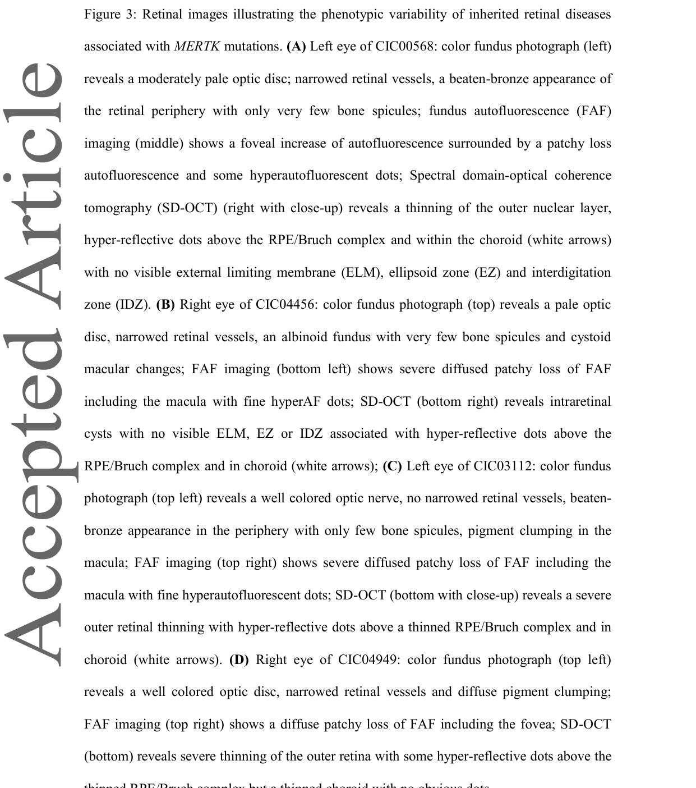

MERTK-related retinopathy (retinitis pigmentosa 38, RP38) is an autosomal recessive inherited retinal dystrophy caused by biallelic loss-of-function variants in MERTK (MER proto-oncogene tyrosine kinase). MERTK encodes a receptor tyrosine kinase expressed on the apical surface of retinal pigment epithelium (RPE) cells, where it is activated by the bridging ligands Gas6 and Protein S to drive daily phagocytosis of shed photoreceptor outer segment (POS) discs. Unlike most retinitis pigmentosa genes, which act cell-autonomously within photoreceptors, MERTK loss disrupts a supporting cell type: RPE cells fail to ensheath, fragment, and internalize shed POS tips, debris accumulates in the subretinal space, and photoreceptors undergo secondary, non-cell-autonomous degeneration. The disease was first identified through the spontaneous Mertk mutation in the Royal College of Surgeons (RCS) rat, a classical model of inherited retinal dystrophy studied since long before its molecular cause was known; screening of the human orthologue provided the first conclusive evidence implicating the RPE phagocytosis pathway in human retinal disease. Clinically, MERTK-RP presents with early/childhood-onset rod-cone dystrophy with disproportionately early macular atrophy and distinctive subretinal debris on OCT, distinguishing it from many other autosomal recessive RP genotypes. MERTK was the target of one of the first subretinal AAV gene-therapy trials for inherited retinal disease; no approved disease-modifying therapy currently exists.
Ask a research question about MERTK-Related Retinopathy. OpenScientist will conduct autonomous deep research using the Disorder Mechanisms Knowledge Base and PubMed literature (typically 10-30 minutes).
Do not include personal health information in your question. Questions and results are cached in your browser's local storage.
name: MERTK-Related Retinopathy
creation_date: "2026-07-20T16:55:00Z"
category: Mendelian
description: >-
MERTK-related retinopathy (retinitis pigmentosa 38, RP38) is an autosomal
recessive inherited retinal dystrophy caused by biallelic loss-of-function
variants in MERTK (MER proto-oncogene tyrosine kinase). MERTK encodes a
receptor tyrosine kinase expressed on the apical surface of retinal pigment
epithelium (RPE) cells, where it is activated by the bridging ligands Gas6
and Protein S to drive daily phagocytosis of shed photoreceptor outer
segment (POS) discs. Unlike most retinitis pigmentosa genes, which act
cell-autonomously within photoreceptors, MERTK loss disrupts a supporting
cell type: RPE cells fail to ensheath, fragment, and internalize shed POS
tips, debris accumulates in the subretinal space, and photoreceptors
undergo secondary, non-cell-autonomous degeneration. The disease was first
identified through the spontaneous Mertk mutation in the Royal College of
Surgeons (RCS) rat, a classical model of inherited retinal dystrophy studied
since long before its molecular cause was known; screening of the human
orthologue provided the first conclusive evidence implicating the RPE
phagocytosis pathway in human retinal disease. Clinically, MERTK-RP presents
with early/childhood-onset rod-cone dystrophy with disproportionately early
macular atrophy and distinctive subretinal debris on OCT, distinguishing it
from many other autosomal recessive RP genotypes. MERTK was the target of
one of the first subretinal AAV gene-therapy trials for inherited retinal
disease; no approved disease-modifying therapy currently exists.
disease_term:
preferred_term: MERTK-related retinopathy
term:
id: MONDO:0800394
label: MERTK-related retinopathy
synonyms:
- RP38
- retinitis pigmentosa 38
- MERTK retinitis pigmentosa
- retinitis pigmentosa caused by mutation in MERTK
parents:
- Retinitis pigmentosa
- Inherited Retinal Dystrophy
notes: >-
The RCS rat carries a spontaneous Mertk-disrupting mutation and has been the
classical animal model of RPE phagocytosis failure and inherited retinal
dystrophy since long before the human gene was cloned; viral Mertk gene
transfer to RCS rat RPE was the first demonstration that a photoreceptor
degeneration caused by a cellular phagocytosis defect could be corrected by
gene delivery to the RPE. Human MERTK-RP is a rare cause of arRP generally
(roughly 1% of cases) but reaches strikingly high regional contributions
through founder alleles: a 91-kb deletion accounts for about 30% of
nonsyndromic RP in the Faroe Islands, and MERTK variants are disproportionately
represented among consanguineous Middle Eastern and North African pedigrees.
Because the primary lesion is in the RPE rather than the photoreceptor
itself, MERTK-RP was an early proof of concept for RPE-targeted subretinal
gene augmentation therapy (rAAV2-VMD2-hMERTK, NCT01482195).
inheritance:
- name: Autosomal recessive
inheritance_term:
preferred_term: Autosomal recessive inheritance
term:
id: HP:0000007
label: Autosomal recessive inheritance
description: >-
Biallelic loss-of-function variants in MERTK cause autosomal recessive
retinitis pigmentosa (RP38). Reported pedigrees are frequently
consanguineous, and disease segregates with homozygosity for the causal
variant.
evidence:
- reference: PMID:21677792
reference_title: "A novel MERTK deletion is a common founder mutation in the Faroe Islands and is responsible for a high proportion of retinitis pigmentosa cases."
supports: SUPPORT
evidence_source: HUMAN_CLINICAL
snippet: "The clinical course of six patients who were homozygous for the deletion showed onset in the first decade followed by a rapid deterioration of both rod and cone photoreceptor function."
explanation: >-
Documents that disease manifests in patients homozygous for the MERTK
founder deletion, consistent with autosomal recessive inheritance.
genetic:
- name: MERTK Biallelic Variants
association: Causative
gene_term:
preferred_term: MERTK
term:
id: hgnc:7027
label: MERTK
features: >-
Biallelic loss-of-function variants (nonsense, frameshift, splice-site,
multi-exon structural deletions) and hypomorphic missense variants in
MERTK, encoding a receptor tyrosine kinase of the TAM family
(Tyro3/Axl/MERTK) expressed on the apical RPE surface, where it mediates
ensheathment and engulfment of shed photoreceptor outer segments.
evidence:
- reference: PMID:11062461
reference_title: "Mutations in MERTK, the human orthologue of the RCS rat retinal dystrophy gene, cause retinitis pigmentosa."
supports: SUPPORT
evidence_source: HUMAN_CLINICAL
snippet: "Mutation of a receptor tyrosine kinase gene, Mertk, in the Royal College of Surgeons (RCS) rat results in defective phagocytosis of photoreceptor outer segments by the retinal pigment epithelium (RPE) and retinal degeneration. We screened the human orthologue, MERTK, located at 2q14.1 (ref. 10), in 328 DNA samples from individuals with various retinal dystrophies and found three mutations in three individuals with retinitis pigmentosa (RP). Our findings are the first conclusive evidence implicating the RPE phagocytosis pathway in human retinal disease."
explanation: >-
Founding discovery paper establishing MERTK mutations as a cause of
human retinitis pigmentosa via the RCS rat orthologue.
- reference: PMID:20300561
reference_title: "Novel mutations in MERTK associated with childhood onset rod-cone dystrophy."
supports: SUPPORT
evidence_source: HUMAN_CLINICAL
snippet: "Long-range PCR identified a ~9 kb deletion within MERTK that removes exon 8. Screening of DNA from a panel of Saudi Arabian patients with autosomal recessive retinitis pigmentosa identified a second consanguineous family with the same mutation. One patient with a known MERTK mutation (p.R651X) was identified using the Asper Ophthalmics Leber congenital amaurosis chip. Further screening of the gene identified a second novel splice site mutation in intron 1."
explanation: >-
Documents structural deletion, nonsense, and splice-site variant classes
in MERTK causing autosomal recessive retinal dystrophy.
- reference: PMID:21677792
reference_title: "A novel MERTK deletion is a common founder mutation in the Faroe Islands and is responsible for a high proportion of retinitis pigmentosa cases."
supports: SUPPORT
evidence_source: HUMAN_CLINICAL
snippet: "A deletion of 91 kb was identified in seven patients, representing 30% of the analyzed Faroese cases of nonsyndromic RP."
explanation: >-
Documents a large founder structural deletion as a major regional cause
of MERTK-related retinopathy.
pathophysiology:
- name: MERTK Loss of Function in RPE
description: >-
Biallelic MERTK variants abolish or severely reduce MERTK receptor
tyrosine kinase activity on the apical surface of RPE cells. MERTK is
activated by the bridging ligands Gas6 and Protein S, which bind
phosphatidylserine exposed on shed photoreceptor outer segment (POS)
tips and signal through MERTK on the RPE apical surface, distinct from
the parallel alphavbeta5 integrin/MFG-E8 pathway that governs the timing
of phagocytic uptake. Loss of MERTK abolishes the receptor-proximal
signal that normally triggers ensheathment and engulfment of POS
particles by the RPE.
gene:
preferred_term: MERTK
modifier: ABSENT
term:
id: hgnc:7027
label: MERTK
cell_types:
- preferred_term: retinal pigment epithelial cell
term:
id: CL:0002586
label: retinal pigment epithelial cell
biological_processes:
- preferred_term: receptor-mediated endocytosis
term:
id: GO:0006898
label: receptor-mediated endocytosis
modifier: DECREASED
evidence:
- reference: PMID:32160519
reference_title: "MERTK-Dependent Ensheathment of Photoreceptor Outer Segments by Human Pluripotent Stem Cell-Derived Retinal Pigment Epithelium."
supports: SUPPORT
evidence_source: IN_VITRO
snippet: "MERTK ligands, GAS6 and PROS1, rather than alphaVbeta5 integrin receptor ligands, triggered POS ensheathment by human embryonic stem cell (hESC)-derived RPE."
explanation: >-
Demonstrates that MERTK-specific ligands (not the parallel integrin
pathway) trigger RPE ensheathment of photoreceptor outer segments.
downstream:
- target: RPE Phagocytic Failure and Outer Segment Debris Accumulation
description: >-
Loss of MERTK-dependent recognition signaling directly prevents RPE
ensheathment, fragmentation, and internalization of shed photoreceptor
outer segments.
causal_link_type: DIRECT
- name: RPE Phagocytic Failure and Outer Segment Debris Accumulation
description: >-
Without functional MERTK signaling, RPE cells fail to ensheath,
fragment, and internalize the photoreceptor outer segment discs that are
normally shed and engulfed each day as part of the outer segment renewal
cycle. Undigested POS debris accumulates in the subretinal space between
the RPE apical surface and the photoreceptor outer segments, visible
clinically as subretinal hyper-reflective debris on OCT. This is a
non-cell-autonomous mechanism: the primary molecular lesion is in the
supporting RPE cell rather than in the photoreceptor itself,
distinguishing MERTK-RP from most other retinitis pigmentosa genes that
act intrinsically within rods and cones.
cell_types:
- preferred_term: retinal pigment epithelial cell
term:
id: CL:0002586
label: retinal pigment epithelial cell
cellular_components:
- preferred_term: photoreceptor outer segment
term:
id: GO:0001750
label: photoreceptor outer segment
biological_processes:
- preferred_term: phagocytosis, engulfment
term:
id: GO:0006911
label: phagocytosis, engulfment
modifier: DECREASED
evidence:
- reference: PMID:32160519
reference_title: "MERTK-Dependent Ensheathment of Photoreceptor Outer Segments by Human Pluripotent Stem Cell-Derived Retinal Pigment Epithelium."
supports: SUPPORT
evidence_source: IN_VITRO
snippet: "RPE derived from human embryonic stem cells (hESCs), in which MERTK was knocked out using CRISPR/Cas9, or from an RP38 patient iPSC cell line with homozygous MERTK deletion, failed to ensheath, fragment, and internalize W-POS, which shows that MERTK is required for ensheathment and ensheathment-mediated fragmentation of POS, and implicates the loss of which in RP38 disease pathology and vision loss in patients."
explanation: >-
Direct experimental demonstration in patient-derived and CRISPR
MERTK-null RPE that loss of MERTK abolishes outer segment ensheathment,
fragmentation, and internalization.
- reference: PMID:20300561
reference_title: "Novel mutations in MERTK associated with childhood onset rod-cone dystrophy."
supports: SUPPORT
evidence_source: HUMAN_CLINICAL
snippet: "The optical coherence tomography (OCT) appearance is distinctive with evidence of debris beneath the sensory retina."
explanation: >-
Clinical OCT confirmation of subretinal debris accumulation
corresponding to the phagocytic failure mechanism.
downstream:
- target: Rod Photoreceptor Apoptosis
description: >-
Failure to clear shed outer segment debris and the resulting loss of
RPE trophic/metabolic support for the outer segment renewal cycle
drives progressive rod photoreceptor degeneration.
causal_link_type: INDIRECT_KNOWN_INTERMEDIATES
intermediate_mechanisms:
- subretinal accumulation of undegraded outer segment debris
- loss of RPE support for outer segment disc renewal
- name: Rod Photoreceptor Apoptosis
conforms_to: "photoreceptor_degeneration#Rod Photoreceptor Apoptosis"
description: >-
Chronic failure of outer segment renewal and accumulation of subretinal
debris produces progressive rod photoreceptor death, the final common
pathway of rod-cone dystrophies. Rods are affected earliest and most
severely, producing the nyctalopia and progressive peripheral field loss
characteristic of MERTK-RP.
cell_types:
- preferred_term: rod photoreceptor cell
term:
id: CL:0000604
label: retinal rod cell
biological_processes:
- preferred_term: neuron apoptotic process
term:
id: GO:0051402
label: neuron apoptotic process
modifier: INCREASED
evidence:
- reference: PMID:23692380
reference_title: "Preclinical potency and safety studies of an AAV2-mediated gene therapy vector for the treatment of MERTK associated retinitis pigmentosa."
supports: SUPPORT
evidence_source: MODEL_ORGANISM
snippet: "MERTK plays a key role in renewal of photoreceptor outer segments (OS) by phagocytosis of shed OS tips. Mutations in MERTK cause impaired phagocytic activity and accumulation of OS debris in the interphotoreceptor space that ultimately leads to photoreceptor cell death."
explanation: >-
Establishes the causal chain from RPE phagocytic failure to
photoreceptor cell death in the RCS rat model.
downstream:
- target: Secondary Cone Degeneration
description: >-
Progressive rod loss leads to non-cell-autonomous secondary cone
degeneration, converting nyctalopia and peripheral field loss into
central vision impairment; central/macular involvement occurs
disproportionately early in MERTK-RP compared with many other arRP
genes.
causal_link_type: INDIRECT_KNOWN_INTERMEDIATES
intermediate_mechanisms:
- loss of rod-derived trophic support for cones
- elevated outer retinal oxygen tension after rod loss
- name: Secondary Cone Degeneration
description: >-
Progressive loss of rod photoreceptors leads to non-cell-autonomous
secondary cone degeneration. As rods are lost, elevated outer retinal
oxygen tension and loss of rod-derived survival factors drive cone
photoreceptor death, converting the initial rod-dominant disease into
central vision impairment; disproportionately early macular involvement
is a distinguishing clinical feature of MERTK-RP.
cell_types:
- preferred_term: cone photoreceptor cell
term:
id: CL:0000573
label: retinal cone cell
biological_processes:
- preferred_term: neuron apoptotic process
term:
id: GO:0051402
label: neuron apoptotic process
modifier: INCREASED
evidence:
- reference: PMID:21677792
reference_title: "A novel MERTK deletion is a common founder mutation in the Faroe Islands and is responsible for a high proportion of retinitis pigmentosa cases."
supports: SUPPORT
evidence_source: HUMAN_CLINICAL
snippet: "Early macular involvement was present, in accordance with that of other reported patients with MERTK mutations."
explanation: >-
Documents disproportionately early macular/cone involvement as a
recurrent feature across MERTK-related retinopathy cohorts.
phenotypes:
- category: Ophthalmologic
name: Childhood-Onset Rod-Cone Dystrophy
description: >-
Progressive dysfunction and loss of both rod and cone photoreceptors,
typically presenting in childhood, the core diagnostic feature of
MERTK-RP, distinguishing it from many later-onset arRP genotypes.
frequency: VERY_FREQUENT
phenotype_term:
preferred_term: Rod-cone dystrophy
term:
id: HP:0000510
label: Rod-cone dystrophy
onset:
onset_category: CHILDHOOD
evidence:
- reference: PMID:20300561
reference_title: "Novel mutations in MERTK associated with childhood onset rod-cone dystrophy."
supports: SUPPORT
evidence_source: HUMAN_CLINICAL
snippet: "The phenotype associated with these identified MERTK mutations is of a childhood onset rod-cone dystrophy with early macular atrophy."
explanation: >-
Directly establishes childhood-onset rod-cone dystrophy as the core
MERTK-RP phenotype.
- category: Ophthalmologic
name: Nyctalopia
description: >-
Night blindness reflecting early rod photoreceptor dysfunction; typically
among the earliest reported symptoms in childhood-onset MERTK-RP.
frequency: VERY_FREQUENT
phenotype_term:
preferred_term: Nyctalopia
term:
id: HP:0000662
label: Nyctalopia
onset:
onset_category: CHILDHOOD
evidence:
- reference: PMID:20300561
reference_title: "Novel mutations in MERTK associated with childhood onset rod-cone dystrophy."
supports: SUPPORT
evidence_source: HUMAN_CLINICAL
snippet: "The phenotype associated with these identified MERTK mutations is of a childhood onset rod-cone dystrophy with early macular atrophy."
explanation: >-
Childhood-onset rod-cone dystrophy manifests clinically as early
nyctalopia, the presenting symptom of rod photoreceptor dysfunction.
- category: Ophthalmologic
name: Abnormal Electroretinogram
description: >-
Full-field and pattern ERG responses are severely reduced or
non-recordable, reflecting combined rod and cone photoreceptor
dysfunction; often barely recordable even at relatively early stages of
disease.
frequency: VERY_FREQUENT
phenotype_term:
preferred_term: Abnormal electroretinogram
term:
id: HP:0000512
label: Abnormal electroretinogram
reports_on:
- target: Rod Photoreceptor Apoptosis
relationship: READOUT_OF
endpoint_context: DIAGNOSTIC
interpretation: Electroretinographic responses reflecting rod (and later cone) photoreceptor degeneration.
evidence:
- reference: PMID:34289798
reference_title: "MERTK retinopathy: biomarkers assessing vision loss."
supports: SUPPORT
evidence_source: HUMAN_CLINICAL
snippet: "Full-field ERG (ffERG) and pattern ERG (pERG) were barely recordable."
explanation: >-
Documents severely reduced/non-recordable ERG responses in a MERTK-RP
cohort.
- category: Ophthalmologic
name: Early Macular Atrophy
description: >-
Macular atrophy occurring disproportionately early relative to typical
autosomal recessive RP, a distinguishing clinical feature of MERTK-RP
that reflects the disease's combined rod and cone vulnerability.
frequency: FREQUENT
phenotype_term:
preferred_term: Macular atrophy
term:
id: HP:0007401
label: Macular atrophy
onset:
onset_category: CHILDHOOD
evidence:
- reference: PMID:20300561
reference_title: "Novel mutations in MERTK associated with childhood onset rod-cone dystrophy."
supports: SUPPORT
evidence_source: HUMAN_CLINICAL
snippet: "The phenotype associated with these identified MERTK mutations is of a childhood onset rod-cone dystrophy with early macular atrophy."
explanation: >-
Establishes early macular atrophy as a defining feature of MERTK-RP.
- reference: PMID:21677792
reference_title: "A novel MERTK deletion is a common founder mutation in the Faroe Islands and is responsible for a high proportion of retinitis pigmentosa cases."
supports: SUPPORT
evidence_source: HUMAN_CLINICAL
snippet: "Early macular involvement was present, in accordance with that of other reported patients with MERTK mutations."
explanation: >-
Corroborates early macular involvement as recurrent across independent
MERTK-RP cohorts.
- category: Ophthalmologic
name: Retinal Pigment Epithelial Mottling with Subretinal Debris
description: >-
Fundus and OCT examination show RPE mottling together with distinctive
subretinal hyper-reflective debris beneath the sensory retina,
corresponding to undigested photoreceptor outer segment material that
the RPE fails to phagocytose. This subretinal debris pattern is a
relatively distinctive OCT finding that can help distinguish MERTK-RP
from other inherited retinal dystrophies.
frequency: FREQUENT
phenotype_term:
preferred_term: Retinal pigment epithelial mottling
term:
id: HP:0007814
label: Retinal pigment epithelial mottling
evidence:
- reference: PMID:20300561
reference_title: "Novel mutations in MERTK associated with childhood onset rod-cone dystrophy."
supports: SUPPORT
evidence_source: HUMAN_CLINICAL
snippet: "The optical coherence tomography (OCT) appearance is distinctive with evidence of debris beneath the sensory retina."
explanation: >-
Documents the distinctive subretinal debris pattern seen on OCT in
MERTK-RP.
- category: Ophthalmologic
name: Constriction of Peripheral Visual Field
description: >-
Kinetic perimetry documents progressive peripheral visual field
restriction as rod and cone photoreceptor loss advances, ranging from
nasal restriction and superior wedge defects to fields that become
undetectable in advanced disease.
frequency: FREQUENT
phenotype_term:
preferred_term: Constriction of peripheral visual field
term:
id: HP:0001133
label: Constriction of peripheral visual field
evidence:
- reference: PMID:34289798
reference_title: "MERTK retinopathy: biomarkers assessing vision loss."
supports: SUPPORT
evidence_source: HUMAN_CLINICAL
snippet: "KP (III4e and V4e) was normal in two eyes, restricted nasally in four eyes, superior wedge defect in two eyes and undetectable in two eyes."
explanation: >-
Quantifies the pattern and range of kinetic-perimetry visual field
loss observed in a MERTK-RP cohort.
- category: Ophthalmologic
name: Progressive Reduction in Visual Acuity
description: >-
Best-corrected visual acuity declines progressively over years,
reflecting combined rod and cone photoreceptor loss and disproportionately
early central/macular involvement relative to other arRP genotypes.
frequency: VERY_FREQUENT
phenotype_term:
preferred_term: Reduced visual acuity
term:
id: HP:0007663
label: Reduced visual acuity
clinical_course: PROGRESSIVE
evidence:
- reference: PMID:34289798
reference_title: "MERTK retinopathy: biomarkers assessing vision loss."
supports: SUPPORT
evidence_source: HUMAN_CLINICAL
snippet: "Mean BCVA at BL and LFU were 0.84 \xB1 0.86 LogMAR and 1.14 \xB1 0.86 LogMAR, respectively. The BCVA decline rate was 0.05 \xB1 0.03 LogMAR units/year."
explanation: >-
Quantifies the rate of progressive visual acuity decline in a
longitudinally followed MERTK-RP cohort.
diagnosis:
- name: Full-Field Electroretinography (ERG)
description: >-
Full-field and pattern ERG are core functional tests in MERTK-RP,
typically showing severely reduced or barely recordable rod and cone
responses even at relatively early disease stages.
diagnosis_term:
preferred_term: electroretinogram procedure
term:
id: NCIT:C101217
label: Retinal Examination
evidence:
- reference: PMID:34289798
reference_title: "MERTK retinopathy: biomarkers assessing vision loss."
supports: SUPPORT
evidence_source: HUMAN_CLINICAL
snippet: "Full-field ERG (ffERG) and pattern ERG (pERG) were barely recordable."
explanation: >-
Supports ffERG/pERG as core diagnostic and monitoring modalities.
- name: Optical Coherence Tomography (OCT)
description: >-
OCT documents ellipsoid zone width and central macular thickness as
quantitative structural progression biomarkers, and identifies the
distinctive subretinal hyper-reflective debris characteristic of
impaired RPE phagocytosis in MERTK-RP.
diagnosis_term:
preferred_term: optical coherence tomography
term:
id: NCIT:C20828
label: Optical Coherence Tomography
evidence:
- reference: PMID:34289798
reference_title: "MERTK retinopathy: biomarkers assessing vision loss."
supports: SUPPORT
evidence_source: HUMAN_CLINICAL
snippet: "Ellipzoid zones (EZ) were measurable in eight eyes with mean BL length of 1293.75 \xB1 421.07 \xB5m and reduction of 140.95 \xB1 69.28 \xB5m/year and mean BL CMT of 174.2 \xB1 37.52 \xB5m with the rate of 11.2 \xB1 12.77 \xB5m declining/year."
explanation: >-
Establishes OCT-derived ellipsoid zone width and central macular
thickness as quantitative progression biomarkers used as trial
endpoints.
- reference: PMID:20300561
reference_title: "Novel mutations in MERTK associated with childhood onset rod-cone dystrophy."
supports: SUPPORT
evidence_source: HUMAN_CLINICAL
snippet: "The optical coherence tomography (OCT) appearance is distinctive with evidence of debris beneath the sensory retina."
explanation: >-
Documents the distinctive OCT subretinal debris finding used to
recognize MERTK-RP.
- name: Molecular Genetic Testing
description: >-
Multi-gene inherited retinal disease NGS panel or exome sequencing
identifies biallelic pathogenic MERTK variants; copy-number-sensitive
analysis (targeted deletion/duplication testing or WGS) is required in
addition to standard exome capture to detect large structural deletions
such as the Faroese founder allele.
diagnosis_term:
preferred_term: genetic testing
term:
id: NCIT:C15709
label: Genetic Testing
evidence:
- reference: PMID:21677792
reference_title: "A novel MERTK deletion is a common founder mutation in the Faroe Islands and is responsible for a high proportion of retinitis pigmentosa cases."
supports: SUPPORT
evidence_source: HUMAN_CLINICAL
snippet: "The 91-kb deletion encompassing exons 1-7 of MERTK is a common founder mutation in the Faroe Islands, responsible for around 30% of RP"
explanation: >-
Demonstrates the need for copy-number-sensitive testing to detect
large structural MERTK deletions in genetic diagnosis.
treatments:
- name: Subretinal AAV2 Gene Therapy (rAAV2-VMD2-hMERTK, Investigational)
description: >-
Subretinal injection of an AAV2 vector expressing human MERTK cDNA under
the RPE-specific VMD2 (bestrophin-1) promoter, developed following
preclinical proof-of-concept in the RCS rat. A completed phase I
open-label dose-escalation trial (NCT01482195) in six patients (ages
14-54) demonstrated an acceptable ocular and systemic safety profile
over 2-year follow-up; three of six patients showed measurable visual
acuity improvement, though the improvement was lost by 2 years in two of
these patients, indicating that current vector/protocol approaches may
provide only transient benefit. No gene therapy for MERTK-RP is FDA
approved as of this writing.
therapeutic_modality: GENE_THERAPY
treatment_term:
preferred_term: gene therapy
term:
id: NCIT:C15238
label: Gene Therapy
evidence:
- reference: PMID:23692380
reference_title: "Preclinical potency and safety studies of an AAV2-mediated gene therapy vector for the treatment of MERTK associated retinitis pigmentosa."
supports: SUPPORT
evidence_source: MODEL_ORGANISM
snippet: "We demonstrate the potency of the vector in RCS rats by improved electroretinogram (ERG) responses in treated eyes compared with contralateral untreated controls."
explanation: >-
Preclinical proof-of-concept demonstrating vector efficacy in the RCS
rat model prior to human trials.
- reference: PMID:26825853
reference_title: "Treatment of retinitis pigmentosa due to MERTK mutations by ocular subretinal injection of adeno-associated virus gene vector: results of a phase I trial."
supports: SUPPORT
evidence_source: HUMAN_CLINICAL
snippet: "Three patients also displayed measurable improved visual acuity in the treated eye following surgery, although the improvement was lost by 2 years in two of these patients. Gene therapy for MERTK-related RP using careful subretinal injection of rAAV2-VMD2-hMERTK is not associated with major side effects and may result in clinical improvement in a subset of patients."
explanation: >-
Reports phase I clinical trial safety and efficacy outcomes, including
the transient nature of visual improvement in some patients.
- reference: PMID:11592982
reference_title: "Correction of the retinal dystrophy phenotype of the RCS rat by viral gene transfer of Mertk."
supports: SUPPORT
evidence_source: MODEL_ORGANISM
snippet: "Histologic and ultrastructural assessment demonstrated substantial sparing of photoreceptors, preservation of outer segment structure, and correction of the RPE phagocytosis defect in areas surrounding the injection site."
explanation: >-
Foundational proof-of-concept study establishing that RPE-directed
Mertk gene transfer corrects the phagocytosis defect and rescues
photoreceptors in the RCS rat.
- reference: clinicaltrials:NCT01482195
reference_title: "Phase I Trial of Ocular Subretinal Injection of a Recombinant Adeno-Associated Virus (rAAV2-VMD2-hMERTK) Gene Vector to Patients With Retinal Disease Due to MERTK Mutations"
supports: SUPPORT
evidence_source: HUMAN_CLINICAL
snippet: "This study was to assess the safety of gene transfer via subretinal administration of rAAV2-VMD2-hMERTK in subjects with MERTK-associated retinitis pigmentosa (RP)."
explanation: >-
Registered clinical trial record for the completed phase I MERTK gene
therapy trial.
- name: Translational Read-Through Inducing Drug Therapy (Ataluren/PTC124, Investigational)
description: >-
For the subset of MERTK-RP caused by premature termination codon (nonsense
or frameshift) alleles, translational read-through inducing drugs (TRIDs)
such as ataluren (PTC124) have been shown in a patient-derived iPSC-RPE
disease model to partially restore MERTK expression and rescue the
phagocytic defect, illustrating a potential genotype-specific small-molecule
strategy. This remains a preclinical/investigational approach with no
human trials specific to MERTK-RP identified to date.
treatment_term:
preferred_term: Pharmacotherapy
term:
id: NCIT:C15986
label: Pharmacotherapy
therapeutic_agent:
- preferred_term: ataluren (PTC124)
term:
id: CHEBI:94805
label: 3-[5-(2-fluorophenyl)-1,2,4-oxadiazol-3-yl]benzoic acid
evidence:
- reference: PMID:28246391
reference_title: "Rescue of the MERTK phagocytic defect in a human iPSC disease model using translational read-through inducing drugs."
supports: SUPPORT
evidence_source: IN_VITRO
snippet: "Rescue of the MERTK phagocytic defect in a human iPSC disease model using translational read-through inducing drugs."
explanation: >-
Title and study directly demonstrate TRID-mediated rescue of the MERTK
phagocytic defect in a patient iPSC-RPE disease model.
- name: Low Vision Rehabilitation
description: >-
Low vision aids, adaptive lighting, and orientation and mobility
training are the mainstay of symptomatic management as visual field and
acuity decline.
treatment_term:
preferred_term: supportive care
term:
id: NCIT:C15747
label: Supportive Care
target_phenotypes:
- preferred_term: Reduced visual acuity
term:
id: HP:0007663
label: Reduced visual acuity
evidence:
- reference: PMID:34289798
reference_title: "MERTK retinopathy: biomarkers assessing vision loss."
supports: SUPPORT
evidence_source: HUMAN_CLINICAL
snippet: "This cohort showed early visual loss, moderately rapid EZ reduction and macular hyperAF."
explanation: >-
Progressive early visual loss in MERTK-RP supports the need for
ongoing low-vision rehabilitative support.
- name: Genetic Counseling
description: >-
Genetic counseling addresses the autosomal recessive inheritance
pattern, 25% recurrence risk for future pregnancies, carrier testing for
at-risk relatives (particularly important in founder populations such as
the Faroe Islands and consanguineous families), and reproductive
options, following molecular confirmation of biallelic MERTK variants.
treatment_term:
preferred_term: genetic counseling
term:
id: NCIT:C15240
label: Genetic Counseling
evidence:
- reference: PMID:21677792
reference_title: "A novel MERTK deletion is a common founder mutation in the Faroe Islands and is responsible for a high proportion of retinitis pigmentosa cases."
supports: SUPPORT
evidence_source: HUMAN_CLINICAL
snippet: "A deletion of 91 kb was identified in seven patients, representing 30% of the analyzed Faroese cases of nonsyndromic RP."
explanation: >-
High regional founder-allele carrier burden supports targeted genetic
counseling and carrier screening in at-risk populations.
- name: Ophthalmologic Surveillance
description: >-
Regular ophthalmologic follow-up with ERG, OCT (ellipsoid zone width,
central macular thickness), and BCVA monitors disease progression and
identifies candidacy for investigational gene-therapy trials.
treatment_term:
preferred_term: eye examination
term:
id: NCIT:C38060
label: Eye Examination
evidence:
- reference: PMID:34289798
reference_title: "MERTK retinopathy: biomarkers assessing vision loss."
supports: SUPPORT
evidence_source: HUMAN_CLINICAL
snippet: "Relative rapid decline in these biomarkers reflecting visual function suggests an early and narrow timespan for intervention."
explanation: >-
Rapid biomarker decline supports close ophthalmologic surveillance to
identify the optimal window for future therapeutic intervention.
clinical_trials:
- name: NCT01482195
phase: PHASE_I
status: COMPLETED
description: >-
Open-label, dose-escalation phase I trial of subretinal injection of
rAAV2-VMD2-hMERTK in six patients (ages 14-54) with MERTK-related
retinitis pigmentosa, assessing ocular and systemic safety over 2-year
follow-up.
target_phenotypes:
- preferred_term: Reduced visual acuity
term:
id: HP:0007663
label: Reduced visual acuity
evidence:
- reference: PMID:26825853
reference_title: "Treatment of retinitis pigmentosa due to MERTK mutations by ocular subretinal injection of adeno-associated virus gene vector: results of a phase I trial."
supports: SUPPORT
evidence_source: HUMAN_CLINICAL
snippet: "All patients completed the 2-year follow-up. Subretinal injection of rAAV2-VMD2-hMERTK was associated with acceptable ocular and systemic safety profiles based on 2-year follow-up."
explanation: >-
Reports the completed trial's safety outcome over the full 2-year
follow-up period.
animal_models:
- species: Rat
genotype: RCS rat (spontaneous Mertk loss-of-function mutation)
description: >-
The Royal College of Surgeons (RCS) rat is the classical naturally
occurring model of RPE phagocytosis failure, long predating identification
of its molecular cause. Positional cloning identified Mertk as the
disrupted gene, and viral gene transfer of Mertk to RCS rat RPE corrects
the phagocytosis defect and rescues photoreceptors, providing the
foundational proof of concept for MERTK gene therapy.
evidence:
- reference: PMID:11592982
reference_title: "Correction of the retinal dystrophy phenotype of the RCS rat by viral gene transfer of Mertk."
supports: SUPPORT
evidence_source: MODEL_ORGANISM
snippet: "The Royal College of Surgeons (RCS) rat is a widely studied animal model of retinal degeneration in which the inability of the retinal pigment epithelium (RPE) to phagocytize shed photoreceptor outer segments leads to a progressive loss of rod and cone photoreceptors."
explanation: >-
Describes the RCS rat as the foundational model of RPE-phagocytosis-defect
retinal degeneration.
- species: Human (patient-derived)
genotype: iPSC-RPE, Ser331Cysfs*5 MERTK frameshift variant (homozygous)
description: >-
Induced pluripotent stem cells derived from a patient with early-onset,
severe autosomal recessive RP carrying a novel MERTK frameshift variant,
differentiated to RPE. Patient-specific RPE cells exhibit the same
defective phagocytosis phenotype seen in human MERTK-RP patients,
validating human cellular disease modeling and providing a platform for
genotype-specific drug screening (e.g., translational read-through
inducing drugs).
evidence:
- reference: PMID:26263531
reference_title: "Human iPSC derived disease model of MERTK-associated retinitis pigmentosa."
supports: SUPPORT
evidence_source: IN_VITRO
snippet: "Upon differentiation of these iPSC towards RPE, patient-specific RPE cells exhibited defective phagocytosis, a characteristic phenotype of MERTK deficiency observed in human patients"
explanation: >-
Confirms that patient-derived iPSC-RPE recapitulates the human
MERTK-RP phagocytosis defect.
references:
- reference: PMID:11062461
title: "Mutations in MERTK, the human orthologue of the RCS rat retinal dystrophy gene, cause retinitis pigmentosa."
findings:
- statement: >-
Screening of the human MERTK orthologue of the RCS rat retinal
dystrophy gene identified mutations in patients with retinitis
pigmentosa, providing the first conclusive evidence implicating the
RPE phagocytosis pathway in human retinal disease.
supporting_text: >-
Mutation of a receptor tyrosine kinase gene, Mertk, in the Royal
College of Surgeons (RCS) rat results in defective phagocytosis of
photoreceptor outer segments by the retinal pigment epithelium (RPE)
and retinal degeneration. We screened the human orthologue, MERTK...
and found three mutations in three individuals with retinitis
pigmentosa (RP). Our findings are the first conclusive evidence
implicating the RPE phagocytosis pathway in human retinal disease.
evidence:
- reference: PMID:11062461
reference_title: "Mutations in MERTK, the human orthologue of the RCS rat retinal dystrophy gene, cause retinitis pigmentosa."
supports: SUPPORT
evidence_source: HUMAN_CLINICAL
snippet: "Mutation of a receptor tyrosine kinase gene, Mertk, in the Royal College of Surgeons (RCS) rat results in defective phagocytosis of photoreceptor outer segments by the retinal pigment epithelium (RPE) and retinal degeneration. We screened the human orthologue, MERTK, located at 2q14.1 (ref. 10), in 328 DNA samples from individuals with various retinal dystrophies and found three mutations in three individuals with retinitis pigmentosa (RP). Our findings are the first conclusive evidence implicating the RPE phagocytosis pathway in human retinal disease."
explanation: >-
Founding discovery paper for MERTK-related retinopathy.
- reference: PMID:32160519
title: "MERTK-Dependent Ensheathment of Photoreceptor Outer Segments by Human Pluripotent Stem Cell-Derived Retinal Pigment Epithelium."
findings:
- statement: >-
MERTK ligands GAS6 and PROS1, not the parallel alphavbeta5 integrin
pathway, trigger RPE ensheathment of photoreceptor outer segments, and
MERTK-null RPE (CRISPR knockout or patient-derived) fails to ensheath,
fragment, or internalize outer segments.
supporting_text: >-
RPE derived from human embryonic stem cells (hESCs), in which MERTK
was knocked out using CRISPR/Cas9, or from an RP38 patient iPSC cell
line with homozygous MERTK deletion, failed to ensheath, fragment, and
internalize W-POS, which shows that MERTK is required for ensheathment
and ensheathment-mediated fragmentation of POS.
evidence:
- reference: PMID:32160519
reference_title: "MERTK-Dependent Ensheathment of Photoreceptor Outer Segments by Human Pluripotent Stem Cell-Derived Retinal Pigment Epithelium."
supports: SUPPORT
evidence_source: IN_VITRO
snippet: "RPE derived from human embryonic stem cells (hESCs), in which MERTK was knocked out using CRISPR/Cas9, or from an RP38 patient iPSC cell line with homozygous MERTK deletion, failed to ensheath, fragment, and internalize W-POS, which shows that MERTK is required for ensheathment and ensheathment-mediated fragmentation of POS, and implicates the loss of which in RP38 disease pathology and vision loss in patients."
explanation: >-
Mechanistic basis for the RPE phagocytic failure pathophysiology
node.
Overview: MERTK-related retinopathy is a rare, autosomal recessive inherited retinal degeneration caused by biallelic loss-of-function variants in MERTK (MER proto-oncogene, tyrosine kinase). It presents classically as an early/childhood-onset, severe rod–cone dystrophy with disproportionately early macular involvement, distinguishing it from typical adult-onset retinitis pigmentosa (RP). The molecular basis was the first conclusive evidence implicating a defect in retinal pigment epithelium (RPE) phagocytosis — rather than a photoreceptor-intrinsic defect — as a cause of human retinal degeneration (Gal et al., Nat Genet 2000, PMID 11062461).
Key identifiers: - MONDO: MONDO:0800394 (MERTK-related retinopathy) - OMIM Phenotype: #613862 — Retinitis Pigmentosa 38 (RP38) - OMIM Gene: 604705 — MER Tyrosine Kinase Protooncogene (MERTK) - Gene locus: 2q13 (also reported as 2q14.1 in older literature) - HGNC: HGNC:7027 - ICD-10-CM: H35.52 (Pigmentary retinal dystrophy / retinitis pigmentosa) — no MERTK-specific ICD code exists; classified under the general RP code - MeSH: Retinitis Pigmentosa (D012174) - Orphanet: No dedicated ORPHA number specific to "MERTK-related retinopathy" was identified in this search; it is grouped under broader entries such as "Severe early-childhood-onset retinal dystrophy" (ORPHA:364055) and "Retinitis pigmentosa" (autosomal recessive) entries. This should be verified directly against the current Orphanet database. - ClinGen Gene-Disease Validity: Definitive* classification (approved 2022-07-07) for MERTK–MERTK-related retinopathy, autosomal recessive inheritance, based on 12/12 maximum genetic evidence points (6 probands, 8 unique variants, segregation LOD 4.63 across 3 families) plus experimental/model organism evidence.
Synonyms/alternative names: Retinitis pigmentosa 38 (RP38); MERTK-associated retinitis pigmentosa; MERTK-related retinitis pigmentosa; childhood-onset rod-cone dystrophy due to MERTK mutation; autosomal recessive retinitis pigmentosa due to MERTK deficiency.
Data source type: This report is derived from aggregated disease-level resources — peer-reviewed case series, natural history cohort studies, gene-disease curation panels (ClinGen), and animal/cellular model literature — not from individual patient EHR data.
Disease causal factor: Purely genetic/monogenic. Biallelic (homozygous or compound heterozygous) pathogenic variants in MERTK are necessary and sufficient to cause disease; no environmental or infectious trigger is implicated in the primary etiology.
Genetic risk factors: - Biallelic loss-of-function or hypomorphic missense variants in MERTK (2q13/2q14.1) — causal. - Consanguinity strongly increases risk given autosomal recessive inheritance; many reported pedigrees are consanguineous Middle Eastern or North African families (Mackay et al., Mol Vis 2010, PMID 20300561). - Population founder alleles (see Section 9) act as regional genetic risk factors (e.g., Faroe Islands 91-kb deletion). - No established modifier genes with strong evidence, though genotype (missense vs. null) appears to influence severity (see below).
Environmental/lifestyle risk factors: None established as causal. As with other RP subtypes, light exposure and oxidative stress are hypothesized generic contributors to photoreceptor stress in degenerating retinas, but no MERTK-specific environmental risk factor has been demonstrated in the literature reviewed.
Protective factors: No genetic or environmental protective factors specific to MERTK-related retinopathy were identified. Vitamin A palmitate supplementation, used generically in RP management, has shown inconsistent/mixed benefit in RP broadly and is not specifically validated for MERTK-related disease.
Gene-environment interactions: None specifically documented for MERTK-related retinopathy in the literature reviewed; this is a monogenic disease with recessive inheritance where phenotype is driven primarily by allelic severity rather than environmental modification.
Phenotype type: Primarily clinical signs and symptoms (ophthalmologic); no behavioral phenotype; some laboratory/imaging biomarkers.
Additional reported signs: Bone-spicule pigmentation (variable/less prominent than typical RP in some case series), attenuated retinal vessels, waxy disc pallor — classic RP fundus triad, present variably.
Quality of life impact: Not separately quantified with validated instruments (EQ-5D/SF-36) in MERTK-specific literature reviewed; broader RP literature documents substantial QOL burden from progressive vision loss affecting independence, employment, and mobility, with impact escalating as patients become legally blind by young/mid-adulthood. No MERTK-specific QOL studies were identified — data gap.
Systemic/extra-ocular phenotype: MERTK-related retinopathy is considered nonsyndromic — disease is confined to the retina/RPE in reported human cohorts, despite MERTK's broader immunologic roles (see Section 6). No consistent systemic autoimmune phenotype has been reported in affected patients, though this remains a theoretical area of interest given MERTK's role in efferocytosis.
Causal gene: MERTK (HGNC:7027; OMIM *604705), chromosome 2q13. Encodes a receptor tyrosine kinase of the TAM (TYRO3/AXL/MERTK) family.
Variant classification and types: Pathogenic variants span essentially all mutation classes: - Missense: e.g., c.1133C>T (p.Thr378Met), c.2163T>A (p.His721Gln), c.1866G>C (p.Lys622Asn), c.2020A>G (p.Met674Val) — PMC9615558; ClinGen curation. - Nonsense: c.1843A>T (p.Lys615); c.2262C>G (p.Tyr754) — ClinGen curation. - Frameshift: c.1744_1751delinsT (p.Ile582Ter, functionally a truncation); Ser331Cysfs5 (used to generate the iPSC disease model, PMID 26263531); c.2214del (p.Cys738Trpfs32). - Splice-site: c.61+1G>A (intron 1 donor site, Mackay et al. PMID 20300561); additional splice mutations reported in consanguineous families with paternal isodisomy for chromosome 2. - Large structural deletions: ~9 kb deletion removing exon 8 (PMID 20300561); 91-kb deletion spanning exons 1–7, a Faroese founder allele arising from non-homologous recombination between Alu and LINE-1 repeats (Molecular Vision, mol vis v24/667); 5-bp deletion reported in a consanguineous family.
Functional consequence: Predominantly loss of function — null alleles (nonsense, frameshift, large deletion, canonical splice-site) abolish MERTK protein/kinase activity; missense variants affect highly conserved residues in functional domains (extracellular Ig-like/fibronectin III domains or the intracellular tyrosine kinase domain) and are predicted pathogenic by low population frequency and computational tools, generally producing hypomorphic or complete loss of kinase signaling. No gain-of-function or dominant-negative mechanism has been described; disease is strictly autosomal recessive, consistent with a loss-of-function/haploinsufficiency-tolerant mechanism (heterozygous carriers are unaffected).
Allele frequency / population genetics: No pathogenic MERTK variant is common in general population databases (gnomAD), consistent with rarity of the disease; MERTK accounts for roughly 1% of autosomal recessive RP cases generally, but with striking founder effects in specific populations (see Section 9). Specific gnomAD allele frequencies for individual pathogenic alleles were not retrievable in this search session — recommend direct gnomAD browser query for exact figures.
Somatic vs. germline: All disease-causing variants are germline. (Note: MERTK has separate, unrelated somatic relevance as an oncogenic driver in leukemia, melanoma, gastric cancer, and Ewing sarcoma — this is a distinct area of cancer biology, not part of the retinal phenotype.)
Modifier genes: No formally validated modifier genes for MERTK-related retinopathy were identified. Genotype-phenotype correlation (null vs. hypomorphic missense alleles) is suggested as an informal severity modifier across case series, but this has not been systematically established.
Epigenetic information: No MERTK-retinopathy-specific epigenetic (DNA methylation/histone) studies were identified in this search — data gap.
Chromosomal abnormalities: No aneuploidy/translocation etiologies reported; disease arises from intragenic variants and structural deletions at the MERTK locus itself, not from large chromosomal rearrangements.
Gene/protein structure: MERTK protein has two Ig-like C2-type domains, two fibronectin type-III domains (ligand-binding extracellular region), a transmembrane domain, and an intracellular tyrosine kinase domain — GeneCards/UniProt.
No established environmental toxin, occupational, or infectious contributors to MERTK-related retinopathy were identified — this is a purely monogenic disease. Lifestyle factors relevant to general RP care (UV/blue-light protection, smoking avoidance for general retinal health) are extrapolated from broader RP guidance rather than MERTK-specific evidence. No infectious agents are implicated.
Causal chain (upstream → downstream): 1. Biallelic loss-of-function MERTK variants → absent/nonfunctional MERTK receptor tyrosine kinase on the apical RPE surface. 2. Failure of MERTK-dependent signaling in response to its ligands Gas6 and Protein S, which normally bind externalized phosphatidylserine on shed photoreceptor outer segment (POS) tips and bridge them to RPE MERTK. 3. Loss of POS ensheathment, fragmentation, and internalization by RPE — MERTK ligands trigger POS ensheathment, and "ensheathment, fragmentation, and internalization [are] abolished in MERTK mutant RPE" (PMC7066375). 4. Progressive accumulation of unphagocytosed/undigested photoreceptor outer segment debris in the subretinal space — visualized clinically as subretinal hyper-reflective debris on OCT and hyperautofluorescence on FAF. 5. Chronic subretinal debris accumulation triggers RPE inflammation — a 2022 study (bioRxiv/PMID pending) reported "Inflammation of the retinal pigment epithelium drives early-onset photoreceptor degeneration in Mertk-associated retinitis pigmentosa," implicating a secondary inflammatory mechanism beyond simple debris toxicity. 6. Secondary photoreceptor (rod, then cone) death by apoptosis, driven by loss of trophic RPE support, toxic debris accumulation, and local inflammation. 7. Clinical endpoint: progressive rod-cone dystrophy, early macular atrophy, and legal blindness by the third–fourth decade.
Molecular pathway: RPE apical phagocytic receptor signaling — two convergent/complementary pathways: (a) αvβ5 integrin, stimulated by MFG-E8, signaling to the actin regulator Rac1 (controls timing of phagocytosis, circadian burst); (b) MERTK, activated by Gas6/Protein S, signaling via focal adhesion kinase (FAK) to drive actual particle internalization. MERTK deficiency selectively abolishes the internalization step while initial binding/recognition may remain partially intact (integrin-mediated).
Cellular processes involved: Phagocytosis/efferocytosis (specifically "clearance phagocytosis"), cytoskeletal (actin) remodeling, receptor tyrosine kinase signal transduction, secondary apoptosis of photoreceptors, and RPE-driven inflammatory signaling.
Protein dysfunction: Loss of MERTK kinase activity (null alleles) or impaired ligand engagement/kinase signaling (missense alleles) — a loss-of-function mechanism at the RPE cell membrane.
Immune system involvement: MERTK is a core "eat-me" signal receptor for apoptotic cell clearance (efferocytosis) broadly, not only in RPE but in macrophages/microglia throughout the body. Mertk-knockout mice show defective macrophage clearance of apoptotic thymocytes/lymphocytes and develop autoimmune features (increased autoantibodies, lupus-like phenotype) due to impaired self-antigen clearance — TAM-receptor-deficient mice are established autoimmunity models. Microglial MERTK deficiency also impairs efferocytosis in the CNS/retina and modulates neuroinflammation. However, systemic autoimmune disease is not a prominent reported feature of human MERTK-related retinopathy patients in the ophthalmic literature reviewed — this immune dimension is primarily documented in model systems and represents a biologically plausible but clinically under-characterized aspect of the human disease.
Tissue damage mechanism: Combination of (1) toxic/metabolic stress from undigested POS debris, (2) chronic local RPE inflammation, and (3) loss of RPE trophic/metabolic support for photoreceptors, converging on photoreceptor apoptosis.
Molecular/omics profiling: No MERTK-retinopathy-specific transcriptomic, proteomic, metabolomic, or lipidomic human datasets were identified in this search. A related mouse model study ("MerTK-cleavage-resistant mouse") reported "retinal atrophy, inflammation, phagocytic and metabolic disruptions" using multimodal approaches, suggesting metabolic dysregulation accompanies phagocytic failure at the mechanistic level in animal models — human confirmatory omics data represent a data gap.
Suggested GO terms: Phagocytosis (GO:0006909); phagocytosis, engulfment (GO:0006911); regulation of phagocytosis (GO:0050764); receptor tyrosine kinase signaling pathway (GO:0007169); apoptotic cell clearance (GO:0043277); photoreceptor cell maintenance (GO:0045494); visual perception (GO:0007601)
Suggested CL (Cell Ontology) terms: Retinal pigment epithelial cell (CL:0002586); rod photoreceptor cell (CL:0000604); cone photoreceptor cell (CL:0000573); microglial cell (CL:0000129); macrophage (CL:0000235)
Organ level: Eye — specifically the retina and retinal pigment epithelium. Disease is nonsyndromic/ocular-limited in humans; no established secondary organ involvement.
Body system: Visual/sensory system (nervous system component — retina is CNS-derived tissue).
Tissue/cell level: - Primary target: Retinal pigment epithelium (RPE) — site of the primary phagocytic defect (CL:0002586). - Secondarily affected: Rod photoreceptors (CL:0000604) — die first/predominantly, consistent with rod-cone dystrophy pattern; cone photoreceptors (CL:0000573), particularly in the macula, affected early and disproportionately relative to typical RP. - Outer nuclear layer (photoreceptor cell bodies) shows thinning on OCT. - Photoreceptor outer segments — site of debris accumulation (ensheathment failure).
Subcellular level (GO Cellular Component): Plasma membrane / apical microvilli of RPE (site of MERTK receptor and phagocytic cup formation, GO:0005886, GO:0031514); phagosome (GO:0045335); relevant to receptor tyrosine kinase trafficking.
Localization (UBERON terms): Retina (UBERON:0000966); retinal pigment epithelium (UBERON:0002566); macula lutea (UBERON:0002187); neural retina.
Lateralization: Bilateral disease; however, asymmetry between the two eyes in visual acuity and macular atrophy extent is a recognized and somewhat distinctive clinical feature (asymmetric VA loss associated with central macular atrophy after age 10, per the 2026 Retina cohort).
Onset: Childhood/juvenile-onset — mean symptom onset ~9.4 years (range 3–16 years across cohorts); essentially all patients symptomatic before age 16. Onset pattern is insidious (gradual nyctalopia progressing over years), not acute.
Progression: - Stages (informal, based on natural history cohorts): (1) Early — nyctalopia with preserved central acuity, childhood; (2) Intermediate — progressive peripheral field constriction with emerging macular atrophy, typically starting after age 10; (3) Advanced — significant bilateral, often asymmetric, central vision loss with legal blindness reached by young-to-mid adulthood (by age 39 in one series; VA 20/70 or worse in at least one eye after age 17 in nearly all patients). - Rate: Relatively rapid/aggressive compared to many other RP genotypes — described as "early-onset and severe form of autosomal recessive RP." Quantified structural progression: EZ width loss ~141 µm/year; central macular thickness loss ~11.2 µm/year; BCVA decline ~0.05 logMAR/year (PMID 34289798). The Faroese founder-deletion homozygotes showed "onset in the first decade followed by a rapid deterioration of both rod and cone photoreceptor function." - Course pattern: Chronic, progressive, non-remitting — no episodic or relapsing-remitting pattern described. - Duration: Lifelong, chronic, currently non-reversible (though early-phase gene therapy trials aim to slow/halt progression — see Section 12).
Patterns: No spontaneous remission reported. No clearly defined "critical window" for intervention has been established in humans, though gene therapy trials have targeted patients across a wide age range (14–54 years in the AAV2 phase I trial), and preclinical models suggest earlier intervention (before substantial photoreceptor loss) is likely to preserve more function — consistent with general IRD gene therapy principles.
Inheritance pattern: Autosomal recessive (confirmed by ClinGen Definitive classification, 2022).
Penetrance: Appears complete/high in biallelic pathogenic variant carriers based on reported pedigrees, though formal penetrance estimates were not identified — data gap.
Expressivity: Variable — age of onset (3–16 years) and rate of progression vary across families/genotypes, suggesting variable expressivity, possibly genotype-dependent (null vs. missense alleles).
Genetic anticipation: Not described/not applicable (not a repeat-expansion disorder).
Germline mosaicism: Not specifically reported for MERTK.
Founder effects: - Faroe Islands: A 91-kb deletion (exons 1–7) is a common founder mutation responsible for ~30% of nonsyndromic RP cases in this population; carrier frequency ~3% among Faroese controls (3/94 anonymous controls) (PMID 21677792). - North Africa: MERTK variants account for ~18% of rod-cone dystrophy in some North African cohorts (vs. ~1% generally in mixed populations) — reflecting regional founder alleles and high consanguinity rates. - Middle East: Multiple consanguineous pedigrees reported (Saudi Arabia — site of the AAV2 gene therapy trial; other Gulf states).
Consanguinity: Plays a major role — many published families are consanguineous, consistent with autosomal recessive inheritance and regional prevalence patterns.
Carrier frequency: General population carrier frequency is presumed low (consistent with ~1% contribution to AR RP generally), but elevated in founder populations (e.g., ~3% in Faroe Islands for the specific 91-kb deletion). Population-wide gnomAD-derived carrier frequency estimates were not retrieved in this session — recommend direct gnomAD query.
Population demographics: No strong sex predilection reported (consistent with autosomal, non-sex-linked inheritance). Geographic clustering in the Faroe Islands, North Africa, and consanguineous Middle Eastern populations, alongside sporadic cases described worldwide (China, Pakistan, UK, US).
Clinical tests: - Fundoscopic examination: RP-pattern findings — bone-spicule pigmentation (variable), attenuated vessels, waxy disc pallor, optic disc drusen (frequently noted in the 2026 Retina cohort), myopia. - Electroretinography (ERG): Full-field and pattern ERG markedly reduced/"barely recordable" in established disease — used to confirm rod-cone dysfunction pattern. - Optical coherence tomography (OCT): Ellipsoid zone (EZ) width and central macular thickness as quantitative structural biomarkers of progression; characteristic subretinal hyper-reflective debris/deposits distinguish MERTK retinopathy from many other IRD genotypes. - Fundus autofluorescence (FAF), including ultra-widefield: Central macular hyperautofluorescence pattern. - Visual field testing: Documents peripheral constriction. - Visual acuity (BCVA): Serial tracking is a core outcome measure in natural history and trial studies.
Genetic testing: - Recommended approach: Multi-gene NGS panel testing for inherited retinal disease (IRD) is first-line, given phenotypic overlap with many other rod-cone/cone-rod dystrophy genes; MERTK is included in standard comprehensive IRD panels (e.g., 176-gene and 351-gene panels referenced in PMC8683638 and PMC11276581). - Panel-based testing yield: Achieves molecular diagnosis in ~59% of IRD patients overall (higher, ~92%, in children under 6). - WES/WGS: Useful for cases where panel testing is non-diagnostic, or to detect structural/deep-intronic variants (e.g., large deletions like the Faroese 91-kb deletion, which would require copy-number-sensitive analysis such as CMA, targeted deletion/duplication analysis, or WGS rather than standard exome capture alone). - Single-gene testing/segregation analysis: Useful in known consanguineous families or when a specific founder variant is suspected (e.g., targeted testing for the Faroese deletion in that population). - Chromosomal microarray/karyotype/FISH: Not primary diagnostic modalities for MERTK (disease is not caused by large chromosomal rearrangements/aneuploidy), though CMA or targeted CNV analysis can detect the multi-exon deletions reported in several families. - Mitochondrial DNA testing: Not applicable (nuclear gene, autosomal recessive).
Clinical/differential diagnosis: MERTK-related retinopathy must be differentiated from other causes of childhood-onset rod-cone/cone-rod dystrophy and early macular atrophy, including RPE65-associated Leber congenital amaurosis/early-onset RP, CRB1-associated retinal dystrophy, ABCA4-associated Stargardt disease/cone-rod dystrophy, RDH12, and other autosomal recessive RP genes (EYS, USH2A with associated hearing loss in Usher syndrome, etc.) — the presence of striking subretinal debris on OCT and disproportionately early macular atrophy are clues favoring MERTK. Genetic testing is required for definitive differentiation since fundus appearance alone is not gene-specific.
Screening: No population-based newborn or carrier screening program specific to MERTK was identified; carrier screening would follow general ACMG guidance for autosomal recessive conditions and would be most relevant in high-prevalence founder populations (e.g., Faroe Islands) or for at-risk consanguineous couples via targeted or expanded carrier screening/GTR-listed panels.
Survival/mortality: MERTK-related retinopathy is an ocular-limited disease with no reported impact on life expectancy or systemic mortality in the human literature reviewed.
Morbidity/functional outcome: Progressive to severe visual disability — legal blindness reported by age 39 in one series, and VA 20/70 or worse in at least one eye after age 17 in nearly all patients in the 2026 cohort. This represents substantial lifelong disability affecting independence, education, employment, and mobility, though no MERTK-specific formal disability/QOL instrument data (ICF, EQ-5D, PROMIS) were identified — data gap.
Disease course/complications: Chronic progressive vision loss; no reported systemic complications. Ocular complications specifically related to investigational gene therapy (not the natural disease) include cataract progression, transient subfoveal fluid, filamentary keratitis, and (in two trial patients) unresolved severe visual acuity loss post-injection (PMID 26825853) — important for informed consent/risk discussions in future trials.
Recovery potential: Without treatment, disease is non-reversible and progressive. With investigational gene therapy, three of six patients in the phase I AAV2 trial showed measurable VA improvement, but improvement was lost by 2 years in two of the three — indicating that current gene augmentation approaches may provide only transient benefit, underscoring the ongoing need for improved vectors/protocols (addressed by newer trials, e.g., Opus Genetics' OPGx-MERTK).
Prognostic factors: Genotype severity (null vs. missense alleles) is an informal prognostic consideration; age/stage at diagnosis affects the amount of remaining photoreceptor structure (EZ width, ONL thickness) available for potential therapeutic rescue — earlier intervention is generally presumed more favorable, consistent with general IRD gene therapy principles, though not proven in a controlled MERTK-specific trial.
Prognostic biomarkers: OCT-derived ellipsoid zone width and central macular thickness, and FAF-defined area of "definitely decreased autofluorescence" (DDAF), have been proposed and used as quantitative biomarkers of disease progression and potential trial endpoints (PMID 34289798; 2026 Retina cohort study).
Current standard of care: No approved disease-modifying or curative therapy exists. Management is supportive only: - Supportive/rehabilitative care: Low-vision aids (magnifiers, handheld/bioptic telescopes, CCTV systems, high-contrast lenses, electronic reading/speech-output devices), orientation and mobility training, glare control/illumination optimization, and low-vision counseling. - Nutritional supplementation: Vitamin A palmitate has been used empirically in RP generally, but evidence is mixed/controversial and not proven to alter visual field, acuity, or dark adaptation in controlled trials; no MERTK-specific vitamin A efficacy data exist. - MAXO term suggestions: "vision assistive device provision," "low vision rehabilitation," "genetic counseling," "orientation and mobility training."
Advanced/experimental therapeutics — Gene therapy (most advanced modality for this specific gene): - Preclinical: AAV2-VMD2-hMERTK (AAV2 vector, RPE-specific VMD2/bestrophin-1 promoter driving human MERTK cDNA) rescued phagocytic function and photoreceptor structure in the RCS rat model, with demonstrated potency and ocular-confined biodistribution (Conlon et al., PMID 23692380). - Completed Phase I trial (NCT01482195): Subretinal rAAV2-VMD2-hMERTK in 6 patients (ages 14–54) — "acceptable ocular and systemic safety profile" over 2-year follow-up; 3/6 patients showed measurable VA improvement, lost in 2/3 by 2 years; adverse events included filamentary keratitis, progressive cataract, transient subfoveal fluid, monocular oscillopsia; no vector-attributable severe adverse events, though two patients (unrelated report) experienced unresolved severe VA loss post-procedure requiring careful risk disclosure (Ghazi et al., PMID 26825853). - New trial (2026, in development): Opus Genetics' OPGx-MERTK, an AAV-based gene therapy, funded via Abu Dhabi's Healthcare Research and Innovation Fund, with Cleveland Clinic Abu Dhabi as the clinical site; clinical development activities expected to commence in 2026, targeting an estimated 60,000 patients worldwide with no approved treatment. - MAXO term suggestion: "gene replacement therapy," "subretinal injection administration."
Other experimental/preclinical approaches: - Translational readthrough-inducing drugs (TRIDs): PTC124 partially restored phagocytosis in an iPSC-RPE MERTK-deficient (nonsense/frameshift, likely applicable to premature termination codon alleles) disease model, illustrating a potential small-molecule strategy for nonsense-mutation subgroups (PMID 28303901/Scientific Reports 2017). - CRISPR/base editing: At least one MERTK variant has been noted as a single-nucleotide transition theoretically amenable to CRISPR-Cas9 base editing (PMC8486302 review) — preclinical/conceptual stage only, no human trials identified. - Long-term rescue studies in rodent models (e.g., Nat Sci Rep 2018, "Long-term Rescue of Photoreceptors in a Rodent Model of Retinitis Pigmentosa Associated with MERTK Mutation") support continued gene-therapy vector optimization.
Pharmacogenomics: No MERTK-specific pharmacogenomic data identified (not applicable to a gene-replacement paradigm in the same way as small-molecule drug metabolism).
Treatment algorithm: Given absence of approved therapy, current clinical pathway is: (1) genetic confirmation of diagnosis, (2) baseline and serial structural/functional biomarker monitoring (OCT EZ width, BCVA, FAF), (3) supportive low-vision care, (4) genetic counseling for family planning, and (5) referral to gene therapy clinical trials where eligible/available (e.g., emerging Opus Genetics OPGx-MERTK trial).
Primary prevention: Not applicable in the traditional sense (no modifiable risk factor); the only "primary prevention" avenue is genetic — carrier screening and reproductive counseling in at-risk families/populations (e.g., consanguineous couples, Faroese descent) to inform reproductive decision-making, including preimplantation genetic diagnosis (PGD) or prenatal testing where a familial pathogenic variant is known.
Secondary prevention: Early genetic diagnosis via NGS panel testing in children presenting with nyctalopia enables earlier initiation of low-vision support services and, potentially, earlier eligibility for gene therapy trials before extensive photoreceptor loss occurs (biologically plausible rationale, not yet proven in controlled human studies).
Tertiary prevention: Low-vision rehabilitation, mobility training, and psychosocial support to minimize functional disability and complications of severe vision loss (falls, social/occupational impact) once disease is established.
Genetic counseling: Central to management — autosomal recessive inheritance implies 25% recurrence risk for future affected offspring of carrier parents; counseling should address consanguinity risk, founder variant testing in relevant populations, and availability of clinical trials.
Screening: No population-based public health screening program exists; targeted carrier screening is most relevant in high-prevalence founder populations (Faroe Islands) or in genetic counseling settings for consanguineous families with a family history of early-onset RP.
Immunization/infectious prevention: Not applicable (non-infectious, monogenic disease).
Taxonomy and naturally occurring disease: - Rat — Royal College of Surgeons (RCS) rat (Rattus norvegicus, NCBI Taxon 10116): The classical, decades-old naturally occurring model. Caused by a large deletion in Mertk (~409 bp reported in one study; ~1,850 bp reported in another, resulting in a truncated protein) that abolishes RPE phagocytic function, producing progressive photoreceptor degeneration. This model preceded and directly led to discovery of human MERTK-RP (D'Cruz et al., Hum Mol Genet 2000; Gal et al., Nat Genet 2000). Historically the single most important natural animal model of RPE-phagocytosis-defect retinal degeneration and the basis for the first successful RPE-directed retinal gene therapy proof-of-concept (viral Mertk gene transfer corrected the phenotype — PMID 11592982). - Dog — Swedish Vallhund (Canis lupus familiaris): A naturally occurring progressive retinal atrophy (PRA) mapped to an intronic LINE-1 retroelement insertion (6–8 kb) in MERTK intron 1, recessively inherited, conferring ~20-fold increased risk of retinopathy in homozygotes; phenotype: normal early vision progressing to nyctalopia and eventual day-vision impairment (PMC5558984). A distinct, milder canine retinopathy with increased MERTK expression has also been described in another breed context (PMC4269413), indicating that both loss- and altered-expression mechanisms can produce canine retinal disease at this locus.
Veterinary relevance: Genetic testing for the Swedish Vallhund LINE-1 insertion is commercially available (e.g., cagt.co.uk) for breeding management, given the ~20-fold risk association and recessive inheritance.
Comparative biology: The RPE phagocytosis pathway and MERTK's role are highly conserved across mammals (rat, dog, mouse, human), supporting strong translational validity of these animal models for mechanism and gene-therapy development. Orthologous gene: Mertk (mouse, MGI:96965; NCBI Gene 17289), Mertk (rat, NCBI Gene 56822).
Zoonotic/transmission potential: Not applicable — this is a non-infectious, purely genetic disease; no cross-species transmission relevance.
Mammalian genetic models: - RCS rat (spontaneous/naturally occurring): Gold-standard model; loss-of-function Mertk mutation causes RPE phagocytic failure and progressive photoreceptor degeneration; extensively used for gene therapy proof-of-concept (viral Mertk delivery corrects phagocytic defect and rescues photoreceptors — PMID 11592982; long-term rescue data in Sci Rep 2018). - Mertk knockout mouse (Mertk⁻/⁻, engineered): Recapitulates an "RCS-like retinal dystrophy phenotype" (IOVS, ARVO). Also used extensively to study MERTK's systemic efferocytosis/immune roles — defective clearance of apoptotic thymocytes/lymphocytes, autoimmune susceptibility (lupus-like phenotype in TAM-deficient mice), and microglial efferocytosis defects. A newer independent knockout allele (PMC11121519, 2024) was generated to re-evaluate and dissect phagocytic versus anti-inflammatory MERTK functions, noting that some other Mertk mutant alleles (e.g., Mertk^nmf12) do not phenocopy the early/rapid RCS-like degeneration — indicating allele-specific phenotypic variability even within mouse models, an important caveat for interpreting model data. - MerTK-cleavage-resistant mouse (engineered, 2024, Frontiers in Neuroscience): A gain-of-function/cleavage-resistant model showing retinal atrophy, inflammation, and phagocytic/metabolic disruption — used to dissect the physiological role of MERTK ectodomain shedding, complementary to loss-of-function models.
Cellular/in vitro models: - Patient-derived iPSC-RPE model: Generated from a patient with the Ser331Cysfs5 frameshift variant; iPSC-RPE cells showed absent MERTK protein and near-absent phagocytic uptake of fluorescently labeled photoreceptor outer segments (minimal internalization vs. clear internalization in controls) — validates human cellular disease modeling and serves as a drug-screening platform (Sci Rep 2015, PMID 26263531; used subsequently for PTC124 TRID rescue studies, Sci Rep 2017). - Human pluripotent stem cell-derived RPE (hPSC-RPE), general):* Used to dissect MERTK-dependent POS ensheathment mechanisms mechanistically (PMC7066375), independent of patient-specific mutations.
Model characteristics — recapitulation and limitations: - Rodent and canine models faithfully recapitulate the core RPE phagocytic defect and progressive photoreceptor loss, and have been essential for gene therapy vector development directly translated into human trials. - Limitation: Mouse Mertk-null models show variable degeneration kinetics depending on the specific allele, complicating direct extrapolation; the RCS rat, while historically foundational, has a genetic background (large deletion, potentially affecting neighboring genes/regulatory elements) that may not perfectly mirror discrete human point mutations. - Human iPSC-RPE models capture the RPE-intrinsic phagocytic defect faithfully but, being 2D monolayer cultures, do not recapitulate the full retinal architecture, chronic inflammatory microenvironment, or systemic immune components (efferocytosis in lymphoid tissue, autoimmunity) seen in whole-organism knockout models.
Applications: RCS rat and Mertk-KO mice — gene therapy vector testing (AAV serotype/promoter optimization), natural history/mechanism studies, and pharmacological modulator testing (e.g., MERTK inhibitor ocular safety studies, PMC8837544, relevant given MERTK's dual role as an oncology drug target). iPSC-RPE — patient-specific mechanism validation and small-molecule (TRID) drug screening for genotype-specific approaches (e.g., nonsense-mutation readthrough).
Resources: MGI (Mouse Genome Informatics) for Mertk mouse alleles; RGD (Rat Genome Database) for RCS rat strain data; no major zebrafish or invertebrate (Drosophila/C. elegans/yeast) MERTK-retinopathy model was identified in this search, likely reflecting the RPE-specific, mammalian-retina-dependent nature of the phenotype.
Question: You are an expert researcher providing comprehensive, well-cited information.
Provide detailed information focusing on: 1. Key concepts and definitions with current understanding 2. Recent developments and latest research (prioritize 2023-2024 sources) 3. Current applications and real-world implementations 4. Expert opinions and analysis from authoritative sources 5. Relevant statistics and data from recent studies
Format as a comprehensive research report with proper citations. Include URLs and publication dates where available. Always prioritize recent, authoritative sources and provide specific citations for all major claims.
Please provide a comprehensive research report on MERTK-Related Retinopathy covering all of the disease characteristics listed below. This report will be used to populate a disease knowledge base entry. Be thorough and cite primary literature (PMID preferred) for all claims.
For each section, suggested databases/resources are listed. These are the first places you should search for information on each topic.
Search first: OMIM, Orphanet, ICD-10/ICD-11, MeSH, PubMed
Search first: PubMed, Cochrane Library, UpToDate, clinical guidelines, ClinVar, ClinGen, GWAS Catalog, PheGenI, CTD, CDC, WHO, epidemiological databases
Search first: PubMed, Cochrane Library, clinical trial databases, GWAS Catalog, gnomAD, WHO, CDC, nutrition databases
Search first: CTD, PubMed, PheGenI, GxE databases
Search first: HPO (Human Phenotype Ontology), OMIM, Orphanet, PubMed, clinicaltrials.gov, MedDRA, SNOMED CT, DECIPHER, LOINC
For each phenotype, provide: - Phenotype type: symptoms, clinical signs, physical manifestations, behavioral changes, or laboratory abnormalities
For symptoms/signs: HPO, OMIM, Orphanet, PubMed For behavioral changes: HPO, DSM, RDoC (Research Domain Criteria), PubMed For laboratory abnormalities: LOINC, SNOMED CT, LabTests Online, PubMed - Phenotype characteristics: Search first: OMIM, Orphanet, HPO, PubMed - Age of symptom onset (neonatal, childhood, adult-onset, late-onset) - Symptom severity (mild, moderate, severe, variable) - Symptom progression (stable, progressive, episodic, fluctuating) - Frequency among affected individuals (percentage or qualitative) - Quality of life impact: Effects on daily functioning and well-being (per-phenotype when possible) Search first: EQ-5D database, SF-36, WHO QOL databases, PubMed - Suggest HPO (Human Phenotype Ontology) terms for each phenotype
Search first: OMIM, ClinVar, HGMD, Ensembl, NCBI Gene
Search first: ENCODE, Roadmap Epigenomics, MethBase, DiseaseMeth
Search first: DECIPHER, ClinVar, ECARUCA, UCSC Genome Browser
Search first: CTD (Comparative Toxicogenomics Database), TOXNET, PubMed, EPA databases
Search first: CDC databases, WHO, PubMed, NHANES
Search first: NCBI Taxonomy, ViPR, BV-BRC, MicrobeDB, GIDEON
Search first: KEGG, Reactome, WikiPathways, PathBank, BioCyc
Search first: Gene Ontology (GO), Reactome, KEGG, PubMed
Search first: UniProt, PDB (Protein Data Bank), InterPro, Pfam, AlphaFold
Search first: KEGG, BioCyc, HMDB (Human Metabolome Database), BRENDA
Search first: ImmPort, Immunome Database, IEDB, Gene Ontology
Search first: PubMed, Gene Ontology, Reactome
Search first: BRENDA, UniProt, KEGG, OMIM, PubMed
Search first: ENCODE, Roadmap Epigenomics, MethBase, DiseaseMeth
For each mechanism, describe: - The causal chain from initial trigger to clinical manifestation - Which mechanisms are upstream vs downstream - What cell types and biological processes are involved - Suggest GO terms for biological processes and CL terms for cell types
Search first: Uberon, FMA (Foundational Model of Anatomy), OMIM, HPO, ICD-11, MeSH, SNOMED CT
Search first: Uberon, Human Protein Atlas, Cell Ontology, Human Cell Atlas, CellMarker, PanglaoDB
Search first: Gene Ontology (Cellular Component), UniProt, Human Protein Atlas
Search first: OMIM, Orphanet, HPO, PubMed
Search first: Disease registries, longitudinal cohort databases, natural history studies, PubMed, Orphanet, OMIM
Search first: Orphanet, CDC, WHO, GBD (Global Burden of Disease), national registries, SEER, disease registries
Search first: GTR (Genetic Testing Registry), GeneReviews, ClinGen
For each treatment, suggest MAXO (Medical Action Ontology) terms where applicable.
Search first: CDC vaccine schedules, WHO immunization, FDA vaccine database
Search first: CDC, WHO, behavioral intervention databases, Cochrane Library
Search first: NSGC resources, ACMG guidelines, GeneReviews
Search first: Clinical guidelines, FDA approvals, PubMed
Search first: NCBI Taxonomy
Search first: VBO (Vertebrate Breed Ontology)
Search first: NCBI Gene
Structure your response as a comprehensive narrative organized by the sections above. For each section, provide: - Factual content with specific details (numbers, percentages, gene names, variant nomenclature) - Ontology term suggestions (HPO, GO, CL, UBERON, CHEBI, MAXO, MONDO) where applicable - Evidence citations with PMIDs - Direct quotes from abstracts to support key claims - Clear indication when information is not available or not applicable for this disease
This report will be used to populate a disease knowledge base entry with: - Pathophysiology descriptions with causal chains - Gene/protein annotations (HGNC, GO terms) - Phenotype associations (HP terms) with frequencies - Cell type involvement (CL terms) - Anatomical locations (UBERON terms) - Chemical entities (CHEBI terms) - Treatment annotations (MAXO terms) - Evidence items with PMIDs and exact abstract quotes - Epidemiology, prognosis, diagnostic, and prevention information - Animal model descriptions with phenotype recapitulation details
MERTK-related retinopathy is a Mendelian, typically autosomal recessive inherited retinal degeneration in which biallelic loss-of-function variants in MERTK impair retinal pigment epithelium (RPE) phagocytosis of shed photoreceptor outer segments (POS), leading to POS debris accumulation and secondary photoreceptor degeneration with progressive vision loss. Mechanistic work in animal models (notably the RCS rat) and human iPSC-/stem cell–derived RPE consistently supports a primary RPE phagocytosis defect as the upstream driver. Clinical translation has included a completed Phase 1 subretinal gene-augmentation trial (rAAV2-VMD2-hMERTK; NCT01482195), which was generally well tolerated but showed variable and limited durability of efficacy signals. (lukovic2015humanipscderived pages 1-2, feng2002mertktriggersuptake pages 1-2, audo2018mertkmutationupdate pages 10-14, NCT01482195 chunk 1, malvasi2023genetherapyin pages 16-18)
MERTK-associated retinopathy is commonly described as MERTK-associated retinitis pigmentosa (RP38) and presents clinically as a rod–cone dystrophy with progressive dysfunction and loss of photoreceptors, often accompanied by RPE abnormalities due to impaired phagocytosis of shed POS. (ramsden2017rescueofthe pages 1-2, lukovic2015humanipscderived pages 1-2)
The available information here is derived from: * Aggregated disease-level resources in the form of reviews and cohort series (e.g., Audo 2018; Malvasi 2023). (malvasi2023genetherapyin pages 16-18, audo2018mertkmutationupdate pages 10-14) * Individual-patient-derived experimental models, including patient iPSC-RPE and stem-cell derived RPE experiments that recapitulate the disease mechanism. (almedawar2020mertkdependentensheathmentof pages 1-2, lukovic2015humanipscderived pages 1-2)
Primary cause: biallelic pathogenic variants in MERTK (TAM-family receptor tyrosine kinase) causing loss of normal RPE phagocytosis of POS. (lukovic2015humanipscderived pages 1-2, ramsden2017rescueofthe pages 1-2)
Mechanistic causal chain (high-level): 1) MERTK deficiency in RPE → 2) failure of POS ensheathment/phagocytic cup formation/internalization → 3) POS debris accumulation in subretinal space → 4) secondary photoreceptor death → 5) progressive rod–cone dystrophy phenotype. (mao2021acuterhoarhokinase pages 1-2, almedawar2020mertkdependentensheathmentof pages 1-2, feng2002mertktriggersuptake pages 1-2)
No MERTK-specific protective genetic or environmental factors were identified in the retrieved full text.
No specific gene–environment interactions were identified for MERTK-related retinopathy in the retrieved full text.
MERTK-associated disease is described as a rod–cone dystrophy (retinitis pigmentosa) with progressive vision loss. (ramsden2017rescueofthe pages 1-2, audo2018mertkmutationupdate pages 10-14)
Evidence-supported clinical phenotypes (with HPO suggestions):
1) Progressive visual field loss / constricted fields * Evidence: In a 25-patient series, visual fields were “constricted to 20 central degrees or below in 92%”. (audo2018mertkmutationupdate pages 10-14) * Suggested HPO: Visual field constriction (HP:0001131)
2) Electroretinography: severe generalized retinal dysfunction (rod+cone) * Evidence: In the same cohort, full-field and multifocal ERG responses were non-detectable. (audo2018mertkmutationupdate pages 10-14) * Suggested HPO: Abnormal electroretinogram (HP:0000548); Reduced rod ERG response (HP:0030512); Reduced cone ERG response (HP:0030513)
3) Fundus changes consistent with RP * Evidence: waxy optic disc pallor, narrowed vessels, peripheral pigmentary changes (described in the 25-patient cohort; and a detailed longitudinal case in a MD/CCRD cohort showed peripheral bone spicule pigmentations). (audo2018mertkmutationupdate pages 10-14, birtel2018clinicalandgenetic pages 4-6) * Suggested HPO: Bone spicule pigmentation of retina (HP:0007703); Retinal vessel attenuation (HP:0007843); Optic disc pallor (HP:0000587)
4) Fundus autofluorescence (FAF) abnormalities * Evidence: abnormal macular FAF patterns in the 25-patient cohort (14/25 foveal increase; 11/25 foveal loss). (audo2018mertkmutationupdate pages 10-14) * Suggested HPO: Abnormality of retinal pigment epithelium (HP:0001132) (imaging surrogate)
5) OCT structural abnormalities of outer retina * Evidence: SD-OCT documented absent preserved outer retinal hyper-reflective bands and other outer retinal/RPE changes in the cohort. (audo2018mertkmutationupdate pages 10-14) * Suggested HPO: Abnormality of the outer retina (HP:0008058)
Direct QoL instrument data (EQ-5D, SF-36, etc.) were not present in the retrieved full text; functional impact is inferred from severe field constriction and ERG extinction in advanced disease. (audo2018mertkmutationupdate pages 10-14)
Suggested ontology mappings: * HGNC symbol: MERTK (not explicitly provided in the retrieved text) * Suggested GO (biological process): phagocytosis; regulation of actin cytoskeleton; circadian regulation of retinal phagocytosis (supported mechanistically). (mao2021acuterhoarhokinase pages 1-2, parinot2024gas6andprotein pages 1-2)
Variant classification (ACMG/ClinVar), allele frequencies (gnomAD), and full variant lists were not extractable from the current full text set and should be curated from ClinVar/LOVD/gnomAD.
No MERTK-specific modifier genes or epigenetic alterations were identified in the retrieved full text.
No disease-specific environmental, lifestyle, or infectious contributors were identified for MERTK-related retinopathy in the retrieved full text.
Upstream trigger: biallelic loss of MERTK function in RPE. (lukovic2015humanipscderived pages 1-2)
Core cellular mechanism: failure of RPE to internalize shed photoreceptor outer segments. * In the RCS rat, the rdy mutation leads to failure of RPE to phagocytize shed outer segment membranes and rapid photoreceptor degeneration; functional Mertk delivery restores phagocytic competence in cultured RCS RPE. (feng2002mertktriggersuptake pages 1-2) * In human stem cell-derived RPE, MERTK is required for ensheathment, fragmentation, and internalization/lysosomal trafficking of POS; these steps are abolished when MERTK is deficient. (almedawar2020mertkdependentensheathmentof pages 1-2, almedawar2020mertkdependentensheathmentof pages 13-16)
Downstream consequences: POS debris accumulation → secondary photoreceptor death → progressive rod–cone dystrophy phenotype (RP). (mao2021acuterhoarhokinase pages 1-2, feng2002mertktriggersuptake pages 1-2)
1) Circadian retinal phagocytosis and ligand regulation * MerTK is required for circadian POS phagocytosis; activity peaks ~2 hours after light onset, and ligand bioavailability varies across the cycle. (parinot2024gas6andprotein pages 1-2)
2) Cytoskeletal control via RhoA/ROCK * In MerTK-deficient RPE, failure of phagocytic cup formation and internalization is linked to dysregulated RhoA/ROCK signaling; acute ROCK inhibition can rescue phagocytic capacity ex vivo. (mao2021acuterhoarhokinase pages 1-2)
3) Engulfment/ensheathment and intracellular signaling * MERTK activation supports F-actin recruitment and the structural steps preceding POS internalization in human stem cell-derived RPE. (almedawar2020mertkdependentensheathmentof pages 1-2)
Suggested GO terms (biological process): * Phagocytosis; actin filament organization; regulation of small GTPase mediated signal transduction; circadian rhythm (retina-specific phagocytosis peak). (mao2021acuterhoarhokinase pages 1-2, parinot2024gas6andprotein pages 1-2)
Suggested CL cell types: * Retinal pigment epithelial cell (CL:0002584) (primary affected cell type) * Rod photoreceptor cell (CL:0000504); Cone photoreceptor cell (CL:0000573) (secondary degenerating targets)
Suggested UBERON terms: * retina (UBERON:0000966) * retinal pigment epithelium (UBERON:0001818)
Not explicitly characterized in retrieved evidence beyond membrane protrusions/ensheathment and phagolysosomal trafficking concepts in stem-cell models. (almedawar2020mertkdependentensheathmentof pages 13-16)
Detailed staged natural history models specific to MERTK were not present in obtainable full text.
Key quantitative data available in the retrieved corpus: * General RP prevalence: ~1/3,500 (contextual RP epidemiology). (lukovic2015humanipscderived pages 1-2) * Relative frequency of MERTK among RP varies by cohort/population: <1% in some consanguineous cohorts; ~2% in a French cohort; and a Faroe Islands founder deletion reportedly accounts for ~30% of RP there. (malvasi2023genetherapyin pages 16-18)
Carrier frequency, penetrance, and sex ratio were not available in the retrieved full text.
A 25-patient cohort provides practical diagnostic features that can guide real-world confirmation and staging: * Visual field testing: severe constriction (≤20°) in 92%. (audo2018mertkmutationupdate pages 10-14) * ERG: non-detectable full-field and multifocal responses (advanced generalized dysfunction). (audo2018mertkmutationupdate pages 10-14) * FAF: abnormal macular FAF patterns in many cases (foveal increase vs loss patterns). (audo2018mertkmutationupdate pages 10-14) * SD-OCT: absence of preserved outer retinal hyper-reflective bands and other outer retinal/RPE-related features. (audo2018mertkmutationupdate pages 10-14)
An example of MERTK-associated disease with longitudinal multimodal imaging progression (FAF/OCT) and acuity decline was reported in a genetically solved MD/CCRD cohort. (birtel2018clinicalandgenetic pages 4-6)
Visual example: Audo et al. include multimodal imaging illustrating phenotypic variability (fundus/FAF/OCT) (audo2018mertkmutationupdate media 4f151ba2, audo2018mertkmutationupdate media 671089b0, audo2018mertkmutationupdate media 989e130f, audo2018mertkmutationupdate media d1ed07a3, audo2018mertkmutationupdate media 2a06f83d).
Formal society diagnostic criteria and a comprehensive differential diagnosis list were not included in the obtained full text; clinically, differential diagnosis overlaps with other rod–cone dystrophies and early-onset retinal dystrophies.
MERTK-associated RP is typically progressive and can be severe, with advanced cases exhibiting extreme field constriction and extinguished ERG responses in cohort data. (audo2018mertkmutationupdate pages 10-14)
Formal survival/mortality is not applicable (non-lethal ocular disease), and quantitative long-term visual prognosis metrics (e.g., median age to legal blindness) were not present in the retrieved full text.
Clinical trial: Trial of subretinal rAAV2-VMD2-hMERTK (Phase 1, open-label dose escalation): * NCT01482195 (ClinicalTrials.gov; first posted 2011; completed). (NCT01482195 chunk 1) * Enrollment: 6 participants, unilateral (one-eye) subretinal injection; safety monitoring included ophthalmic exams plus OCT and functional testing; follow-up out to 2 years with extended follow-up. (NCT01482195 chunk 1)
Reported outcomes (secondary sources in retrieved corpus): * Good overall tolerability with no serious ocular/systemic AEs reported over 2 years in one review. (nuzbrokh2021genetherapyfor pages 5-7) * Efficacy was variable/limited: one review reports BCVA improvement in 3/6 participants, while 2023–2024 reviews emphasize that only 1 patient maintained visual gain at 2 years. (nuzbrokh2021genetherapyfor pages 5-7, malvasi2023genetherapyin pages 16-18, vingolo2024retinitispigmentosafrom pages 6-7)
Translational readthrough-inducing drugs (TRIDs): * In a human iPSC-RPE disease model, PTC124 restored phagocytosis to ~12% of control (quantified as internalized POS/area) whereas G418 restored detectable protein but did not restore function and could inhibit phagocytosis in controls. (ramsden2017rescueofthe pages 2-3)
Low-vision rehabilitation and supportive measures are standard for RP in general, but disease-specific supportive-care trial evidence was not present in the retrieved full text.
Suggested MAXO terms (indicative): * Gene therapy (MAXO:0001001; gene supplementation/augmentation—subretinal AAV) * Low vision rehabilitation (MAXO term not retrieved in evidence; recommend mapping in downstream curation)
No primary prevention exists for monogenic MERTK loss-of-function disease. Evidence-supported preventive actions are mainly secondary/tertiary prevention in the sense of early diagnosis and counseling: * Confirmed genetic diagnosis supports counseling and potential trial access. (gliem2020quantitativefundusautofluorescence pages 1-2)
Carrier screening, cascade testing, prenatal testing, and preimplantation genetic testing are clinically relevant but were not described in detail in the obtained full text.
A naturally occurring, recessively inherited retinal degeneration due to Mertk mutation is classically described in the Royal College of Surgeons (RCS) rat (rdy mutation). (feng2002mertktriggersuptake pages 1-2)
1) RCS rat (rdy; Mertk loss-of-function) * Mechanism: RPE fails to phagocytize shed POS membranes; POS debris accumulates and photoreceptors degenerate. (feng2002mertktriggersuptake pages 1-2) * Translational use: ex vivo/cell culture gene delivery of wild-type Mertk to RCS RPE rescues phagocytosis; in vivo viral gene transfer studies show transient functional and structural improvements in reviews. (petrssilva2013advancesingene pages 2-3, feng2002mertktriggersuptake pages 1-2)
2) Mer/Mertk knockout mice * Reported to exhibit an RCS-like retinal dystrophy phenotype (via citations in mechanistic literature). (almedawar2020mertkdependentensheathmentof pages 16-16)
3) Human iPSC-RPE and stem cell–derived RPE models * Recapitulate defective POS phagocytosis and enable mechanistic dissection and therapeutic screening (TRIDs; pathway manipulation). (almedawar2020mertkdependentensheathmentof pages 1-2, lukovic2015humanipscderived pages 1-2, ramsden2017rescueofthe pages 2-3)
| Domain | Finding (with numbers) | Evidence type | Source (first author year journal) | URL/DOI |
|---|---|---|---|---|
| Epidemiology | General RP prevalence ≈ 1 in 3,500; autosomal recessive RP accounts for >50% of RP cases; MERTK causes early-onset severe arRP (lukovic2015humanipscderived pages 1-2) | Human clinical / disease-model context | Lukovic 2015 Scientific Reports | https://doi.org/10.1038/srep12910 |
| Epidemiology | MERTK mutations reported in <1% of RP patients in some consanguineous Middle East/Saudi/Spain/Morocco cohorts; ~2% in a French cohort; a Faroe Islands founder deletion accounts for ~30% of RP cases there (malvasi2023genetherapyin pages 16-18) | Human cohort / review synthesis | Malvasi 2023 Int J Mol Sci | https://doi.org/10.3390/ijms241813756 |
| Diagnostics | In a 25-patient MERTK cohort, visual fields were constricted to 20 central degrees or below in 92%; color vision abnormal in 24/25; full-field and multifocal ERG responses were non-detectable; FAF showed abnormal macular patterns (14/25 foveal increase, 11/25 foveal loss) (audo2018mertkmutationupdate pages 10-14) | Human cohort | Audo 2018 Human Mutation | https://doi.org/10.1002/humu.23431 |
| Diagnostics | In a 230-patient macular/cone-cone rod dystrophy cohort, 15 had reduced qAF8 and 3/15 (20%) of that reduced-qAF subgroup had MERTK mutations (gliem2020quantitativefundusautofluorescence pages 1-2) | Human cohort | Gliem 2020 Ophthalmology Retina | https://doi.org/10.1016/j.oret.2020.02.009 |
| Diagnostics | A longitudinal MERTK case in a 251-patient MD/CCRD series progressed from 20/20–20/25 vision to 20/2000 in one eye over 2 years, with progressive FAF/OCT abnormalities (birtel2018clinicalandgenetic pages 4-6) | Human case within cohort | Birtel 2018 Scientific Reports | https://doi.org/10.1038/s41598-018-22096-0 |
| Treatment | Phase I subretinal gene therapy trial NCT01482195 enrolled 6 participants; one eye treated; follow-up to 2 years with extension to 5 years; endpoints included BCVA, FST, OCT thickness, safety labs/antibodies (NCT01482195 chunk 1) | Clinical trial | ClinicalTrials.gov 2011 NCT01482195 | https://clinicaltrials.gov/study/NCT01482195 |
| Treatment | Reviews of NCT01482195 report good tolerability/no serious ocular or systemic AEs, 3/6 participants with BCVA improvement, but only 1/6 maintained visual gain at 2 years (nuzbrokh2021genetherapyfor pages 5-7, malvasi2023genetherapyin pages 16-18, vingolo2024retinitispigmentosafrom pages 6-7) | Clinical trial / review synthesis | Nuzbrokh 2021 Ann Transl Med; Malvasi 2023 Int J Mol Sci; Vingolo 2024 Medicina | https://doi.org/10.21037/atm-20-4726 ; https://doi.org/10.3390/ijms241813756 ; https://doi.org/10.3390/medicina60010189 |
| Treatment | In MERTK-nonsense iPSC-RPE, PTC124 restored phagocytic activity to ~12% of control (0.22 to 3.22 internalized POS per 0.01 mm², p=0.002); G418 restored detectable protein but not function (ramsden2017rescueofthe pages 2-3, ramsden2017rescueofthe pages 1-2) | In vitro human iPSC model | Ramsden 2017 Scientific Reports | https://doi.org/10.1038/s41598-017-00142-7 |
| Mechanism | In human stem-cell RPE, wild-type cells ensheathed POS by 3 h and fragmented them by 5 h; functional RPE fragmented POS in ~52 min with subsequent internalization in ~30 min; these steps were abolished in MERTK-deficient cells (almedawar2020mertkdependentensheathmentof pages 13-16, almedawar2020mertkdependentensheathmentof pages 1-2) | In vitro human stem-cell model | Almedawar 2020 Stem Cell Reports | https://doi.org/10.1016/j.stemcr.2020.02.004 |
| Mechanism | Circadian regulation: MerTK function peaks about 2 h after light onset; Gas6 and Protein S show time-varying bioavailability and cooperative control of the daily phagocytic burst (parinot2024gas6andprotein pages 1-2) | Mechanistic in vivo/in vitro | Parinot 2024 Int J Mol Sci | https://doi.org/10.3390/ijms25126630 |
| Models | RCS rat carries an rdy Mertk loss-of-function allele with translation termination at codon 20; adenoviral Mertk delivery restored phagocytic competence of cultured RCS RPE cells to wild-type levels (feng2002mertktriggersuptake pages 1-2) | Animal / ex vivo rescue | Feng 2002 J Biol Chem | https://doi.org/10.1074/jbc.m107876200 |
| Models | Preclinical rescue in RCS rat: adenoviral/AAV MERTK transfer improved histology/function, but photoreceptor survival extension was transient, reported for only ~12 weeks despite ongoing transgene expression (petrssilva2013advancesingene pages 2-3) | Animal / preclinical gene therapy | Petrs-Silva 2013 Clinical Ophthalmology | https://doi.org/10.2147/OPTH.S38041 |
Table: This table compiles the main quantitative data available for MERTK-related retinopathy across epidemiology, diagnostics, treatment, mechanism, and model systems. It is useful as a compact evidence summary for building a disease knowledge base entry.
The retrieved full text did not contain: * MONDO/Orphanet/MeSH/ICD identifiers for MERTK-related retinopathy. * ClinVar/gnomAD allele frequencies and ACMG classifications for specific MERTK variants. * Detailed natural history metrics (e.g., annual EZ loss) and standardized QoL outcomes. * Formal differential diagnosis lists or consensus diagnostic criteria specific to MERTK.
These elements should be populated using external databases (OMIM/Orphanet/MONDO/MeSH/ICD; ClinVar/gnomAD; GeneReviews) in a subsequent curation step.
References
(lukovic2015humanipscderived pages 1-2): Dunja Lukovic, Ana Artero Castro, Ana Belen Garcia Delgado, María de los Angeles Martín Bernal, Noelia Luna Pelaez, Andrea Díez Lloret, Rocío Perez Espejo, Kunka Kamenarova, Laura Fernández Sánchez, Nicolás Cuenca, Marta Cortón, Almudena Avila Fernandez, Anni Sorkio, Heli Skottman, Carmen Ayuso, Slaven Erceg, and Shomi S. Bhattacharya. Human ipsc derived disease model of mertk-associated retinitis pigmentosa. Scientific Reports, Aug 2015. URL: https://doi.org/10.1038/srep12910, doi:10.1038/srep12910. This article has 68 citations and is from a peer-reviewed journal.
(feng2002mertktriggersuptake pages 1-2): Wei Feng, Douglas Yasumura, Michael T. Matthes, Matthew M. LaVail, and Douglas Vollrath. Mertk triggers uptake of photoreceptor outer segments during phagocytosis by cultured retinal pigment epithelial cells*. The Journal of Biological Chemistry, 277:17016-17022, May 2002. URL: https://doi.org/10.1074/jbc.m107876200, doi:10.1074/jbc.m107876200. This article has 312 citations.
(audo2018mertkmutationupdate pages 10-14): Isabelle Audo, Saddek Mohand-Said, Elise Boulanger-Scemama, Xavier Zanlonghi, Christel Condroyer, Vanessa Démontant, Fiona Boyard, Aline Antonio, Cécile Méjécase, Said El Shamieh, José-Alain Sahel, and Christina Zeitz. Mertk mutation update in inherited retinal diseases. Human Mutation, 39:887-913, Jul 2018. URL: https://doi.org/10.1002/humu.23431, doi:10.1002/humu.23431. This article has 84 citations and is from a domain leading peer-reviewed journal.
(NCT01482195 chunk 1): Trial of Subretinal Injection of (rAAV2-VMD2-hMERTK). King Khaled Eye Specialist Hospital. 2011. ClinicalTrials.gov Identifier: NCT01482195
(malvasi2023genetherapyin pages 16-18): Mariaelena Malvasi, Lorenzo Casillo, Filippo Avogaro, Alessandro Abbouda, and Enzo Maria Vingolo. Gene therapy in hereditary retinal dystrophies: the usefulness of diagnostic tools in candidate patient selections. International Journal of Molecular Sciences, 24:13756, Sep 2023. URL: https://doi.org/10.3390/ijms241813756, doi:10.3390/ijms241813756. This article has 27 citations.
(ramsden2017rescueofthe pages 1-2): Conor M. Ramsden, Britta Nommiste, Amelia R. Lane, Amanda-Jayne F. Carr, Michael B. Powner, Matthew J. K. Smart, Li Li Chen, Manickam N. Muthiah, Andrew R. Webster, Anthony T. Moore, Michael E. Cheetham, Lyndon da Cruz, and Peter J. Coffey. Rescue of the mertk phagocytic defect in a human ipsc disease model using translational read-through inducing drugs. Scientific Reports, Mar 2017. URL: https://doi.org/10.1038/s41598-017-00142-7, doi:10.1038/s41598-017-00142-7. This article has 53 citations and is from a peer-reviewed journal.
(almedawar2020mertkdependentensheathmentof pages 1-2): Seba Almedawar, Katerina Vafia, Sven Schreiter, Katrin Neumann, Shahryar Khattak, Thomas Kurth, Marius Ader, Mike O. Karl, Stephen H. Tsang, and Elly M. Tanaka. Mertk-dependent ensheathment of photoreceptor outer segments by human pluripotent stem cell-derived retinal pigment epithelium. Stem Cell Reports, 14:374-389, Mar 2020. URL: https://doi.org/10.1016/j.stemcr.2020.02.004, doi:10.1016/j.stemcr.2020.02.004. This article has 44 citations and is from a domain leading peer-reviewed journal.
(mao2021acuterhoarhokinase pages 1-2): Yingyu Mao and Silvia C. Finnemann. Acute rhoa/rho kinase inhibition is sufficient to restore phagocytic capacity to retinal pigment epithelium lacking the engulfment receptor mertk. Cells, 10:1927, Jul 2021. URL: https://doi.org/10.3390/cells10081927, doi:10.3390/cells10081927. This article has 14 citations.
(birtel2018clinicalandgenetic pages 4-6): Johannes Birtel, Tobias Eisenberger, Martin Gliem, Philipp L. Müller, Philipp Herrmann, Christian Betz, Diana Zahnleiter, Christine Neuhaus, Steffen Lenzner, Frank G. Holz, Elisabeth Mangold, Hanno J. Bolz, and Peter Charbel Issa. Clinical and genetic characteristics of 251 consecutive patients with macular and cone/cone-rod dystrophy. Scientific Reports, Mar 2018. URL: https://doi.org/10.1038/s41598-018-22096-0, doi:10.1038/s41598-018-22096-0. This article has 238 citations and is from a peer-reviewed journal.
(parinot2024gas6andprotein pages 1-2): Célia Parinot, Jonathan Chatagnon, Quentin Rieu, Solène Roux, Dorine Néel, Florian Hamieh, and Emeline F. Nandrot. Gas6 and protein s ligands cooperate to regulate mertk rhythmic activity required for circadian retinal phagocytosis. International Journal of Molecular Sciences, 25:6630, Jun 2024. URL: https://doi.org/10.3390/ijms25126630, doi:10.3390/ijms25126630. This article has 10 citations.
(almedawar2020mertkdependentensheathmentof pages 13-16): Seba Almedawar, Katerina Vafia, Sven Schreiter, Katrin Neumann, Shahryar Khattak, Thomas Kurth, Marius Ader, Mike O. Karl, Stephen H. Tsang, and Elly M. Tanaka. Mertk-dependent ensheathment of photoreceptor outer segments by human pluripotent stem cell-derived retinal pigment epithelium. Stem Cell Reports, 14:374-389, Mar 2020. URL: https://doi.org/10.1016/j.stemcr.2020.02.004, doi:10.1016/j.stemcr.2020.02.004. This article has 44 citations and is from a domain leading peer-reviewed journal.
(audo2018mertkmutationupdate media 4f151ba2): Isabelle Audo, Saddek Mohand-Said, Elise Boulanger-Scemama, Xavier Zanlonghi, Christel Condroyer, Vanessa Démontant, Fiona Boyard, Aline Antonio, Cécile Méjécase, Said El Shamieh, José-Alain Sahel, and Christina Zeitz. Mertk mutation update in inherited retinal diseases. Human Mutation, 39:887-913, Jul 2018. URL: https://doi.org/10.1002/humu.23431, doi:10.1002/humu.23431. This article has 84 citations and is from a domain leading peer-reviewed journal.
(audo2018mertkmutationupdate media 671089b0): Isabelle Audo, Saddek Mohand-Said, Elise Boulanger-Scemama, Xavier Zanlonghi, Christel Condroyer, Vanessa Démontant, Fiona Boyard, Aline Antonio, Cécile Méjécase, Said El Shamieh, José-Alain Sahel, and Christina Zeitz. Mertk mutation update in inherited retinal diseases. Human Mutation, 39:887-913, Jul 2018. URL: https://doi.org/10.1002/humu.23431, doi:10.1002/humu.23431. This article has 84 citations and is from a domain leading peer-reviewed journal.
(audo2018mertkmutationupdate media 989e130f): Isabelle Audo, Saddek Mohand-Said, Elise Boulanger-Scemama, Xavier Zanlonghi, Christel Condroyer, Vanessa Démontant, Fiona Boyard, Aline Antonio, Cécile Méjécase, Said El Shamieh, José-Alain Sahel, and Christina Zeitz. Mertk mutation update in inherited retinal diseases. Human Mutation, 39:887-913, Jul 2018. URL: https://doi.org/10.1002/humu.23431, doi:10.1002/humu.23431. This article has 84 citations and is from a domain leading peer-reviewed journal.
(audo2018mertkmutationupdate media d1ed07a3): Isabelle Audo, Saddek Mohand-Said, Elise Boulanger-Scemama, Xavier Zanlonghi, Christel Condroyer, Vanessa Démontant, Fiona Boyard, Aline Antonio, Cécile Méjécase, Said El Shamieh, José-Alain Sahel, and Christina Zeitz. Mertk mutation update in inherited retinal diseases. Human Mutation, 39:887-913, Jul 2018. URL: https://doi.org/10.1002/humu.23431, doi:10.1002/humu.23431. This article has 84 citations and is from a domain leading peer-reviewed journal.
(audo2018mertkmutationupdate media 2a06f83d): Isabelle Audo, Saddek Mohand-Said, Elise Boulanger-Scemama, Xavier Zanlonghi, Christel Condroyer, Vanessa Démontant, Fiona Boyard, Aline Antonio, Cécile Méjécase, Said El Shamieh, José-Alain Sahel, and Christina Zeitz. Mertk mutation update in inherited retinal diseases. Human Mutation, 39:887-913, Jul 2018. URL: https://doi.org/10.1002/humu.23431, doi:10.1002/humu.23431. This article has 84 citations and is from a domain leading peer-reviewed journal.
(gliem2020quantitativefundusautofluorescence pages 1-2): Martin Gliem, Philipp L. Müller, Johannes Birtel, Philipp Herrmann, Myra B. McGuinness, Frank G. Holz, and Peter Charbel Issa. Quantitative fundus autofluorescence and genetic associations in macular, cone, and cone–rod dystrophies. Jul 2020. URL: https://doi.org/10.1016/j.oret.2020.02.009, doi:10.1016/j.oret.2020.02.009. This article has 36 citations and is from a peer-reviewed journal.
(nuzbrokh2021genetherapyfor pages 5-7): Yan Nuzbrokh, Sara D. Ragi, and Stephen H. Tsang. Gene therapy for inherited retinal diseases. Annals of Translational Medicine, 9:1278-1278, Aug 2021. URL: https://doi.org/10.21037/atm-20-4726, doi:10.21037/atm-20-4726. This article has 119 citations.
(vingolo2024retinitispigmentosafrom pages 6-7): Enzo Maria Vingolo, Simona Mascolo, Filippo Miccichè, and Gregorio Manco. Retinitis pigmentosa: from pathomolecular mechanisms to therapeutic strategies. Medicina, 60:189, Jan 2024. URL: https://doi.org/10.3390/medicina60010189, doi:10.3390/medicina60010189. This article has 60 citations.
(ramsden2017rescueofthe pages 2-3): Conor M. Ramsden, Britta Nommiste, Amelia R. Lane, Amanda-Jayne F. Carr, Michael B. Powner, Matthew J. K. Smart, Li Li Chen, Manickam N. Muthiah, Andrew R. Webster, Anthony T. Moore, Michael E. Cheetham, Lyndon da Cruz, and Peter J. Coffey. Rescue of the mertk phagocytic defect in a human ipsc disease model using translational read-through inducing drugs. Scientific Reports, Mar 2017. URL: https://doi.org/10.1038/s41598-017-00142-7, doi:10.1038/s41598-017-00142-7. This article has 53 citations and is from a peer-reviewed journal.
(petrssilva2013advancesingene pages 2-3): Hilda Petrs-Silva and Rafael Linden. Advances in gene therapy technologies to treat retinitis pigmentosa. Clinical Ophthalmology (Auckland, N.Z.), 8:127-136, Dec 2013. URL: https://doi.org/10.2147/opth.s38041, doi:10.2147/opth.s38041. This article has 116 citations.
(almedawar2020mertkdependentensheathmentof pages 16-16): Seba Almedawar, Katerina Vafia, Sven Schreiter, Katrin Neumann, Shahryar Khattak, Thomas Kurth, Marius Ader, Mike O. Karl, Stephen H. Tsang, and Elly M. Tanaka. Mertk-dependent ensheathment of photoreceptor outer segments by human pluripotent stem cell-derived retinal pigment epithelium. Stem Cell Reports, 14:374-389, Mar 2020. URL: https://doi.org/10.1016/j.stemcr.2020.02.004, doi:10.1016/j.stemcr.2020.02.004. This article has 44 citations and is from a domain leading peer-reviewed journal.
